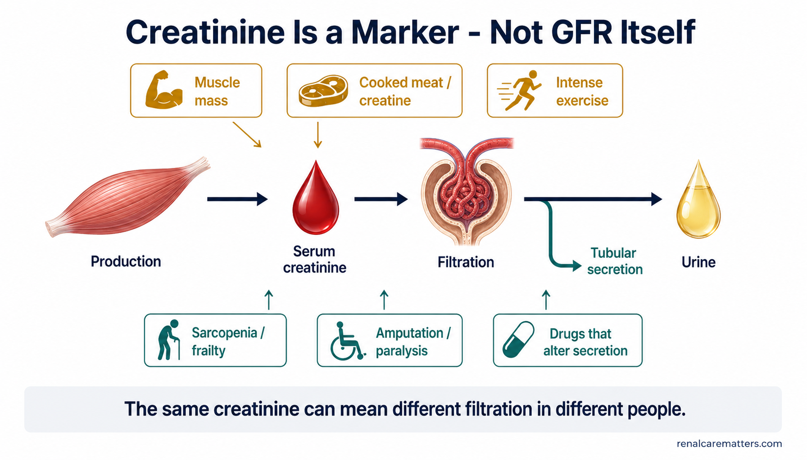
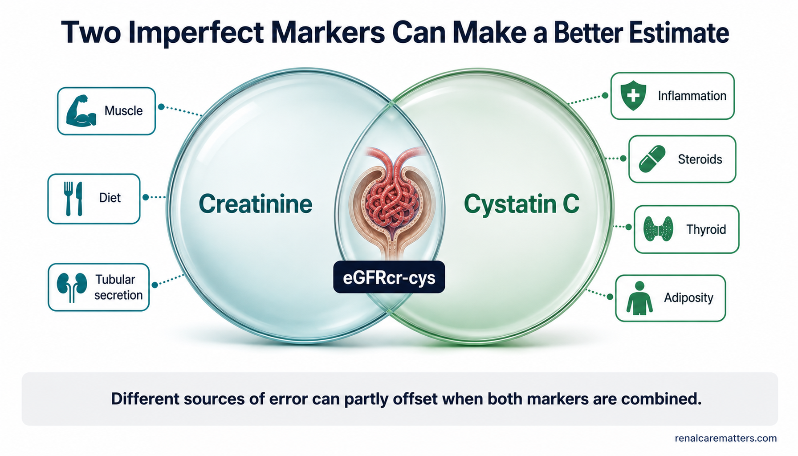
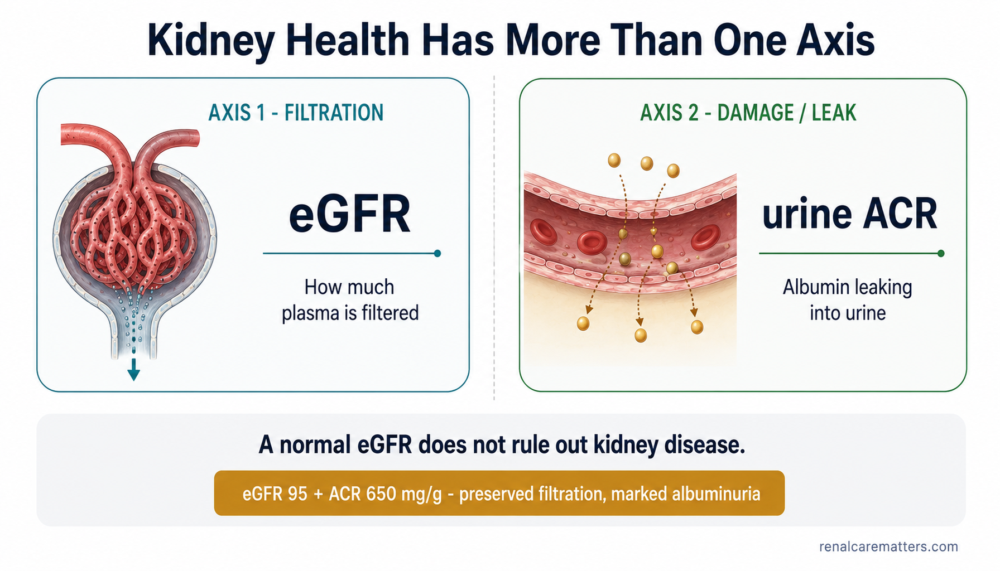

Creatinine is measured. eGFR is estimated. GFR can be measured. And filtration is only part of kidney health.Ang creatinine ay sinusukat. Ang eGFR ay tinatantiya. Ang GFR ay puwedeng sukatin. At ang pagsasala ay bahagi lamang ng kalusugan ng bato.Ang creatinine gisukod. Ang eGFR gibanabana. Ang GFR mahimong sukdon. Ug ang pagsala usa lamang ka bahin sa panglawas sa kidney.Ing creatinine sinusukat ya. Ing eGFR babanaban ya. Ing GFR asukat ya. At ing pamanala metung mung dake ning kayapan ning batu.
When people say "kidney function," they usually mean one thing the kidney does — filtering the blood, measured as the glomerular filtration rate (GFR). But the number on your lab report is almost never a direct measurement of that filtration. It is a serum marker plugged into a formula. Understanding the difference between what is measured, what is estimated, and what can be measured directly when it matters is the whole point of this guide.Kapag sinabi ng mga tao na "paggana ng bato," karaniwang tinutukoy nila ang isang bagay na ginagawa ng bato — ang pagsasala ng dugo, na sinusukat bilang glomerular filtration rate (GFR). Ngunit ang numero sa inyong lab report ay halos hindi kailanman tuwirang sukat ng pagsasalang iyon. Ito ay isang serum marker na inilalagay sa isang pormula. Ang pag-unawa sa pagkakaiba ng kung ano ang sinusukat, kung ano ang tinatantiya, at kung ano ang puwedeng sukatin nang tuwiran kapag mahalaga ang buong layunin ng gabay na ito.Kung moingon ang mga tawo og "paggana sa kidney," kasagaran ang buot ipasabot nila usa ka butang nga gibuhat sa kidney — ang pagsala sa dugo, nga gisukod isip glomerular filtration rate (GFR). Apan ang numero sa imong lab report halos dili gyud usa ka direkta nga sukod niana nga pagsala. Kini usa ka serum marker nga gisulod sa usa ka pormula. Ang pagsabot sa kalainan tali sa kung unsa ang gisukod, kung unsa ang gibanabana, ug kung unsa ang mahimong sukdon direkta kung importante mao ang tibuok tuyo niini nga giya.Nung sasabian da reng tau "pamagobra ning batu," kalimpenan ing buri dang sabian metung a bage a gagawan ning batu — ing pamanala ning daya, a sukat bilang glomerular filtration rate (GFR). Dapot ing numeru king inyong lab report halos e ne pane direktang sukad ning pamanala a ita. Metung ya mung serum marker a ibili king metung a pormula. Ing pamaintindi king pilubngan ning nanu ing sinusukat, nanu ing babanaban, at nanu ing asukat nang direkta nung importante ita ing mabilug a tuki ning giya a ini.
If you remember only five things:Kung limang bagay lang ang tatandaan ninyo:Kung lima ra ka butang ang imong hinumdoman:Nung limang bage mu ing tandanan mu:
1. Serum creatinine is a blood marker, not a direct measurement of kidney function.
2. For most adults, serum creatinine placed into a validated estimating equation — an estimated GFR (eGFR) — is the first assessment of filtration.
3. When accuracy matters or creatinine may mislead, adding cystatin C (a second blood marker) usually gives a better estimate.
4. When even that is not accurate enough for a high-stakes decision, a directly measured GFR (mGFR) using a special filtration marker can be used where available.
5. A complete kidney check also asks whether the kidney is damaged — especially with a urine albumin-to-creatinine ratio (uACR) — because normal filtration does not rule out kidney disease.1. Ang serum creatinine ay isang blood marker, hindi tuwirang sukat ng paggana ng bato.
2. Para sa karamihan ng may sapat na gulang, ang serum creatinine na inilagay sa isang validated na estimating equation — isang estimated GFR (eGFR) — ang unang pagsusuri ng pagsasala.
3. Kapag mahalaga ang katumpakan o baka makapagpahiwatig ng mali ang creatinine, ang pagdagdag ng cystatin C (isang pangalawang blood marker) ay kadalasang nagbibigay ng mas mahusay na tantiya.
4. Kapag kahit iyon ay hindi sapat na tumpak para sa isang mahalagang desisyon, puwedeng gamitin ang tuwirang measured GFR (mGFR) gamit ang isang espesyal na filtration marker kung saan magagamit.
5. Ang kumpletong pagsusuri ng bato ay nagtatanong din kung ang bato ba ay napinsala — lalo na sa pamamagitan ng urine albumin-to-creatinine ratio (uACR) — dahil ang normal na pagsasala ay hindi nagtatanggal sa posibilidad ng sakit sa bato.1. Ang serum creatinine usa ka blood marker, dili usa ka direkta nga sukod sa paggana sa kidney.
2. Alang sa kadaghanan sa mga hamtong, ang serum creatinine nga gisulod sa usa ka validated nga estimating equation — usa ka estimated GFR (eGFR) — mao ang unang pagsusi sa pagsala.
3. Kung importante ang katukma o mahimong makapasayop ang creatinine, ang pagdugang og cystatin C (usa ka ikaduhang blood marker) kasagaran mohatag og mas maayong banabana.
4. Kung bisan kana dili igo ka tukma alang sa usa ka importanteng desisyon, mahimong gamiton ang direkta nga measured GFR (mGFR) gamit ang usa ka espesyal nga filtration marker kung diin magamit.
5. Ang kompleto nga pagsusi sa kidney mangutana usab kung ang kidney ba nadaot — labi na pinaagi sa urine albumin-to-creatinine ratio (uACR) — kay ang normal nga pagsala dili makatangtang sa sakit sa kidney.1. Ing serum creatinine metung yang blood marker, ali yang direktang sukad ning pamagobra ning batu.
2. Para karing kalakalan a matua, ing serum creatinine a ibili king metung a validated a estimating equation — metung a estimated GFR (eGFR) — ita ing mumunang pamanuri ning pamanala.
3. Nung importante ing katutuan o malyaring makapamie mali ing creatinine, ing pamagdagdag cystatin C (metung a kadwang blood marker) kalimpenan mamie yang mas mayap a banabana.
4. Nung agyang ita e ne sukad a tama para king metung a importanteng desisyon, malyaring gamitan ing direktang measured GFR (mGFR) a gagamit metung a espesyal a filtration marker nung nokarin ya agamit.
5. Ing kumpletung pamanuri ning batu magkutang ya rin nung ing batu mesira ya — lalu na king urine albumin-to-creatinine ratio (uACR) — uling ing normal a pamanala e na aalis ing posibilidad ning sakit king batu.
Four things almost everyone gets wrong.Apat na bagay na halos lahat ay namamali.Upat ka butang nga halos tanan masayop.Apat a bage a halos ngan mimali.

The kidney-filtration measurement ladder. Four ascending steps add precision only when the clinical decision needs it: serum creatinine (a measured marker), eGFR from creatinine (an estimate), eGFR from creatinine plus cystatin C (usually the best routine estimate), and measured GFR (clearance of an injected filtration marker). A separate horizontal rail underneath shows that urine ACR is not a rung on the ladder — it measures kidney damage, a different axis, not filtration.Ang hagdan ng pagsukat ng pagsasala ng bato. Apat na paakyat na hakbang ang nagdaragdag ng katumpakan tuwing kailangan ng klinikal na desisyon: serum creatinine (isang sinusukat na marker), eGFR mula sa creatinine (isang tantiya), eGFR mula sa creatinine kasama ang cystatin C (kadalasan ang pinakamahusay na routine na tantiya), at measured GFR (clearance ng isang injected na filtration marker). Isang hiwalay na pahalang na riles sa ilalim ang nagpapakita na ang urine ACR ay hindi isang baitang sa hagdan — sinusukat nito ang pinsala sa bato, isang ibang axis, hindi pagsasala.Ang hagdanan sa pagsukod sa pagsala sa kidney. Upat ka pasaka nga lakang ang nagdugang og katukma matag gikinahanglan sa klinikal nga desisyon: serum creatinine (usa ka gisukod nga marker), eGFR gikan sa creatinine (usa ka banabana), eGFR gikan sa creatinine dugang cystatin C (kasagaran ang labing maayo nga routine nga banabana), ug measured GFR (clearance sa usa ka injected nga filtration marker). Usa ka bulag nga pahigda nga riles sa ilawom nagpakita nga ang urine ACR dili usa ka ang-ang sa hagdanan — gisukod niini ang kadaot sa kidney, usa ka lain nga axis, dili pagsala.Ing hagdan ning pamanukat king pamanala ning batu. Apat a paakyat a dalan ing magdagdag katutuan tuki nung kailangan ning klinikal a desisyon: serum creatinine (metung a sinusukat a marker), eGFR ibat king creatinine (metung a banabana), eGFR ibat king creatinine kayabe ing cystatin C (kalimpenan ing pekamayap a routine a banabana), at measured GFR (clearance ning metung a injected a filtration marker). Metung a hiwalay a pahalang a riles king lalam ing pakit na ing urine ACR ali yang metung a baitang king hagdan — sukat na ing pinsala king batu, metung a aliwang axis, ali pamanala.
- GFR
- Glomerular filtration rateGlomerular filtration rateGlomerular filtration rateGlomerular filtration rate
- eGFR
- Estimated glomerular filtration rateEstimated glomerular filtration rateEstimated glomerular filtration rateEstimated glomerular filtration rate
- uACR
- Urine albumin-to-creatinine ratioUrine albumin-to-creatinine ratioUrine albumin-to-creatinine ratioUrine albumin-to-creatinine ratio
Your kidneys do far more than filter.Ang inyong mga bato ay gumagawa ng higit pa sa pagsasala.Ang imong mga kidney nagbuhat og labaw pa sa pagsala.Deng inyong batu magobra lang mas marakal pa king pamanala.
Before any test makes sense, it helps to know what the kidneys actually do. Filtration — cleaning waste and excess fluid out of the blood — is the headline job, and it is the one GFR measures. But it is not the whole story. The kidneys also fine-tune water and sodium balance, hold potassium in a narrow safe range, manage the body's acid-base balance, help control blood pressure through the renin system, make the hormone erythropoietin that tells the marrow to build red blood cells, and switch on the active form of vitamin D that keeps bones and minerals healthy.Bago magkaroon ng saysay ang anumang pagsusuri, makatutulong na malaman kung ano talaga ang ginagawa ng mga bato. Ang pagsasala — ang paglilinis ng dumi at labis na likido sa dugo — ang pangunahing gawain, at ito ang sinusukat ng GFR. Ngunit hindi ito ang buong kuwento. Ang mga bato ay nagsasaayos din ng balanse ng tubig at sodium, nagpapanatili ng potassium sa makitid na ligtas na saklaw, namamahala sa acid-base balance ng katawan, tumutulong kontrolin ang presyon ng dugo sa pamamagitan ng renin system, gumagawa ng hormone na erythropoietin na nag-uutos sa utak ng buto na gumawa ng pulang selula ng dugo, at nagpapagana sa aktibong anyo ng bitamina D na nagpapanatiling malusog ang buto at mineral.Sa dili pa mosaysay ang bisan unsang pagsusi, makatabang nga mahibalo kung unsa gyud ang gibuhat sa mga kidney. Ang pagsala — ang paglimpyo sa hugaw ug sobrang likido sa dugo — mao ang nag-unang buluhaton, ug kini ang gisukod sa GFR. Apan dili kini ang tibuok istorya. Ang mga kidney nag-ayos usab sa balanse sa tubig ug sodium, nagtipig sa potassium sa hiktin nga luwas nga han-ay, nagdumala sa acid-base balance sa lawas, nagtabang sa pagkontrol sa presyon sa dugo pinaagi sa renin system, naghimo sa hormone nga erythropoietin nga nagsulti sa utok sa bukog nga maghimo og pula nga selula sa dugo, ug nagbukas sa aktibo nga porma sa bitamina D nga nagtipig sa bukog ug mineral nga himsog.Bayu magkasaysay ing nanumang pamanuri, makatulung nung abalu tamu nung nanu talaga ing gagawan ding batu. Ing pamanala — ing pamanglinis ning dumi at sobrang danum king daya — ita ing pekamaragul a obra, at ita ing sukat ning GFR. Dapot ali ya iti ing mabilug a kwentu. Deng batu maglinis la rin king balanse ning danum at sodium, papanatilian da ing potassium king makitid a ligtas a saklaw, mamahala king acid-base balance ning katawan, magsaup king pamangontrol king presyon ning daya kapamilatan ning renin system, gagawa lang hormone a erythropoietin a mag-utus king utak ning butul a gumawa malutung selula ning daya, at pagpaganan de ing aktibong anyu ning bitamina D a papanatilian nang malusug ing butul at mineral.
That matters for interpreting a test, because a single filtration number cannot tell you how well those other jobs are going. Someone can have a filtration number in one range while anemia, bone-mineral problems or acid build-up quietly develop. This is exactly why the international kidney body — Kidney Disease: Improving Global Outcomes (KDIGO) — advises using the term GFR for filtration specifically, and the broader term kidney function(s) for the totality of what the kidneys do.Mahalaga iyon sa pag-unawa ng isang pagsusuri, dahil ang isang filtration number lamang ay hindi masasabi sa inyo kung gaano kahusay ang mga ibang gawaing iyon. Ang isang tao ay puwedeng may filtration number sa isang saklaw habang tahimik na umuunlad ang anemia, mga problema sa buto't mineral o pag-ipon ng acid. Ito mismo ang dahilan kung bakit ipinapayo ng internasyonal na samahan sa bato — ang Kidney Disease: Improving Global Outcomes (KDIGO) — na gamitin ang terminong GFR partikular para sa pagsasala, at ang mas malawak na terminong paggana ng bato para sa kabuuan ng ginagawa ng mga bato.Importante kana sa paghubad sa usa ka pagsusi, kay ang usa lamang ka filtration number dili makasulti kanimo kung unsa ka maayo ang uban nga mga buluhaton. Ang usa ka tawo mahimong adunay filtration number sa usa ka han-ay samtang hilom nga mouswag ang anemia, mga problema sa bukog-mineral o pagtapok sa acid. Kini gyud ang hinungdan nganong girekomendar sa internasyonal nga lawas sa kidney — ang Kidney Disease: Improving Global Outcomes (KDIGO) — nga gamiton ang termino nga GFR ilabina alang sa pagsala, ug ang mas lapad nga termino nga paggana sa kidney alang sa kinatibuk-an sa gibuhat sa mga kidney.Importante ita king pamaintindi king metung a pamanuri, uling ing metung mung filtration number e na asabi kekayu nung makananu kayap deng aliwang obra a ita. Ing metung a tau malyaring atin filtration number king metung a saklaw kabang tahimik yang tutubu ing anemia, deng problema king butul at mineral o pamituki ning acid. Ita mismu ing dahilan nung bakit ipapayu ning internasyonal a samahan king batu — ing Kidney Disease: Improving Global Outcomes (KDIGO) — a gamitan ing terminung GFR partikular para king pamanala, at ing mas malwak a terminung pamagobra ning batu para king kabuuan ning gagawan ding batu.
The key sentence to hold ontoAng mahalagang pangungusap na dapat panghawakanAng importanteng tudling nga angay huptonIng importanteng amanu a dapat panyilan
GFR is the best-established single index of filtration — but it is not a complete inventory of everything the kidneys do. No routine blood test captures "percent kidney function," because there is no single number that could.Ang GFR ang pinakamahusay na natatatag na iisang index ng pagsasala — ngunit ito ay hindi kumpletong talaan ng lahat ng ginagawa ng mga bato. Walang routine na blood test ang nakukuha ang "porsyento ng paggana ng bato," dahil walang iisang numero ang makakagawa nito.Ang GFR mao ang labing maayo nga natukod nga usa ka index sa pagsala — apan kini dili usa ka kompleto nga talaan sa tanang gibuhat sa mga kidney. Walay routine nga blood test ang makakuha sa "porsyento sa paggana sa kidney," kay walay usa ka numero nga makahimo niini.Ing GFR ita ing pekamayap a natatag a metung a index ning pamanala — dapot iti ali metung a kumpletung talaan ning ngan a gagawan ding batu. Alang routine a blood test a akua ing "porsyento ning pamagobra ning batu," uling alang metung a numeru a agyang gawan iti.
What "GFR" actually means.Ano talaga ang ibig sabihin ng "GFR".Unsa gyud ang buot ipasabot sa "GFR".Nanu talaga ing buri nang sabian ning "GFR".
Imagine a substance that rides into the kidney in the blood, slips freely through the glomerular filter, and is then neither added back nor pulled out by the tubules downstream. How fast it disappears from the plasma tells you how much plasma the glomeruli are clearing of that substance each minute. That flow — millilitres of plasma cleared per minute — is the glomerular filtration rate. GFR is a flow idea, a clearance, not a static "level."Isipin ang isang sangkap na sumasakay sa dugo papasok sa bato, dumadaan nang malaya sa glomerular filter, at pagkatapos ay hindi na ibinabalik o hinihila palabas ng mga tubule sa ibaba. Kung gaano kabilis itong nawawala sa plasma ang nagsasabi sa inyo kung gaano karaming plasma ang nililinis ng mga glomeruli sa sangkap na iyon bawat minuto. Ang daloy na iyon — mga mililitro ng plasma na nalinisan bawat minuto — ang glomerular filtration rate. Ang GFR ay isang ideya ng daloy, isang clearance, hindi isang static na "antas."Hunahunaa ang usa ka sustansya nga mosakay sa dugo pasulod sa kidney, moagi nga gawasnon sa glomerular filter, ug dayon dili na ibalik o birahon pagawas sa mga tubule sa ubos. Kung unsa ka paspas kini mawala sa plasma mao ang mosulti kanimo kung pila ka plasma ang gilimpyohan sa mga glomeruli niana nga sustansya matag minuto. Kana nga dagayday — mga mililitro sa plasma nga nalimpyohan matag minuto — mao ang glomerular filtration rate. Ang GFR usa ka ideya sa dagayday, usa ka clearance, dili usa ka static nga "lebel."Isipan me ing metung a sangkap a susake king daya papasual king batu, dadalan yang malaya king glomerular filter, at kaibat ali ne ibabalik o ilabas ding tubule king lalam. Nung makananu kasibul yang mawala king plasma ita ing sasabi kekayu nung makananu karakal a plasma ing lilinisan ding glomeruli king sangkap a ita balang minutu. Ing agus a ita — deng mililitro ning plasma a melinis balang minutu — ita ing glomerular filtration rate. Ing GFR metung yang ideya ning agus, metung a clearance, ali metung a static a "antas."
On an adult lab report, eGFR is written as mL/min/1.73 m². The "1.73 m²" is a conventional body-surface-area index used to make results comparable between people of different sizes — it is not your literal body surface area, and it is not a percentage. Two more honest caveats: your true physiological GFR drifts over the day and over your life, and even a directly measured GFR carries some biological and measurement variability. There is simply no routine test that stamps a precise "percent kidney function" on a person.Sa isang lab report ng may sapat na gulang, ang eGFR ay nakasulat bilang mL/min/1.73 m². Ang "1.73 m²" ay isang kombensyonal na body-surface-area index na ginagamit upang maihambing ang mga resulta sa pagitan ng mga taong may iba't ibang laki — ito ay hindi ang inyong literal na body surface area, at hindi ito porsyento. Dalawa pang tapat na paalala: ang inyong tunay na physiological GFR ay nagbabago sa buong araw at sa buong buhay ninyo, at kahit ang isang tuwirang measured GFR ay may kaunting biological at measurement variability. Talagang walang routine na pagsusuri na nagtatatak ng tumpak na "porsyento ng paggana ng bato" sa isang tao.Sa usa ka lab report sa hamtong, ang eGFR gisulat isip mL/min/1.73 m². Ang "1.73 m²" usa ka kombensyonal nga body-surface-area index nga gigamit aron ikompara ang mga resulta tali sa mga tawo nga lainlain og gidak-on — kini dili ang imong literal nga body surface area, ug dili kini porsyento. Duha pa ka matinud-anon nga pahinumdom: ang imong tinuod nga physiological GFR magbag-o sa tibuok adlaw ug sa tibuok kinabuhi, ug bisan ang usa ka direkta nga measured GFR adunay gamay nga biological ug measurement variability. Wala gyoy routine nga pagsusi nga magtatak og tukma nga "porsyento sa paggana sa kidney" sa usa ka tawo.King metung a lab report ning matua, ing eGFR misulat yang bilang mL/min/1.73 m². Ing "1.73 m²" metung yang kombensyonal a body-surface-area index a gagamit bang ihambing deng resulta king pilubngan ding taung atin miayaliwang laki — iti ali ing inyong literal a body surface area, at ali ya porsyento. Adwa pang tapat a paala: ing inyong tunay a physiological GFR magbayu ya king mabilug a aldo at king mabilug a bie yu, at agyang ing metung a direktang measured GFR atin ne kaunting biological at measurement variability. Talagang alang routine a pamanuri a magtatak king tama a "porsyento ning pamagobra ning batu" king metung a tau.
Why "percent kidney function" keeps causing harmBakit patuloy na nakakasama ang "porsyento ng paggana ng bato"Ngano nga padayong makadaot ang "porsyento sa paggana sa kidney"Bakit tuluy-tuluy a makasama ing "porsyento ning pamagobra ning batu"
Translating "eGFR 60" into "60% kidney function" is one of the most common and damaging errors in kidney care. It invents a precision that does not exist, frightens people whose filtration is actually stable, and hides the fact that the number is an estimate. eGFR 60 means "an estimated filtration of about 60 mL/min per 1.73 m² of body surface" — nothing more, and nothing about a percentage.Ang pagsasalin ng "eGFR 60" sa "60% paggana ng bato" ay isa sa pinakakaraniwan at nakapipinsalang pagkakamali sa pangangalaga ng bato. Nag-iimbento ito ng katumpakang wala naman, tinatakot ang mga taong ang pagsasala ay matatag naman, at itinatago ang katotohanang ang numero ay isang tantiya lamang. Ang ibig sabihin ng eGFR 60 ay "isang tinatayang pagsasala na humigit-kumulang 60 mL/min bawat 1.73 m² ng body surface" — wala nang iba, at wala itong kinalaman sa porsyento.Ang paghubad sa "eGFR 60" ngadto sa "60% paggana sa kidney" usa sa labing kasagaran ug makadaot nga sayop sa pag-atiman sa kidney. Nag-imbento kini og katukma nga wala man, nakahadlok sa mga tawo kansang pagsala lig-on man, ug gitagoan ang kamatuoran nga ang numero usa lamang ka banabana. Ang buot ipasabot sa eGFR 60 mao ang "usa ka gibanabana nga pagsala nga mga 60 mL/min matag 1.73 m² sa body surface" — wala nay lain, ug walay labot sa porsyento.Ing pamagsalin king "eGFR 60" king "60% pamagobra ning batu" metung ya karing pekakalimpenan at makasira a mali king pamaningkap king batu. Mag-imbento yang katutuan a alang naman, tatakutan da reng tau a ing pamanala matatag naman, at itatagu ing katutuan a ing numeru metung mung banabana. Ing buri nang sabian ning eGFR 60 ita ing "metung a babanaban a pamanala a manga 60 mL/min balang 1.73 m² ning body surface" — alang na aliwa, at alang keng kaugnayan king porsyento.
Add precision only when the decision needs it.Magdagdag ng katumpakan lamang kapag kailangan ng desisyon.Pagdugang og katukma lamang kung gikinahanglan sa desisyon.Magdagdag katutuan mu nung kailangan ning desisyon.
There is not one "kidney test." There is a ladder. Each rung is more accurate — and usually more expensive or more involved — than the one below it. Most people never need to climb past the second rung. You move up only when the marker below might be misleading, or when a decision is important enough to justify the extra accuracy.Walang iisang "pagsusuri ng bato." May hagdan. Ang bawat baitang ay mas tumpak — at kadalasang mas mahal o mas masalimuot — kaysa sa nasa ibaba nito. Karamihan ng tao ay hindi kailanman kailangang umakyat lampas sa ikalawang baitang. Umaakyat lang kayo kapag ang marker sa ibaba ay baka nakapagpapahiwatig ng mali, o kapag ang isang desisyon ay sapat na kahalaga para bigyang-katwiran ang dagdag na katumpakan.Walay usa ka "pagsusi sa kidney." Adunay hagdanan. Ang matag ang-ang mas tukma — ug kasagaran mas mahal o mas lisod — kay sa naa sa ubos niini. Kadaghanan sa mga tawo dili gyud kinahanglan mosaka labaw sa ikaduhang ang-ang. Mosaka ka lamang kung ang marker sa ubos mahimong makapasayop, o kung ang usa ka desisyon igo ka importante aron mopakamatarong sa dugang nga katukma.Alang metung a "pamanuri king batu." Atin hagdan. Ing balang baitang mas tama — at kalimpenan mas mal o mas masalimuot — kesa king atyu king lalam na. Kalakalan ding tau e la pane kailangan a mukiat lagpas king kadwang baitang. Mukiat mu kayu nung ing marker king lalam malyaring makapamie mali, o nung ing metung a desisyon sukad yang importante bang bigyan-katwiran ing dagdag a katutuan.
Serum creatinine — a measured markerSerum creatinine — isang sinusukat na markerSerum creatinine — usa ka gisukod nga markerSerum creatinine — metung a sinusukat a marker
A blood test that is cheap and everywhere. It is a real measurement, but of a marker — creatinine is influenced by more than filtration, so on its own it cannot be read as kidney function.Isang blood test na mura at nasa lahat ng dako. Ito ay tunay na sukat, ngunit ng isang marker — ang creatinine ay naiimpluwensyahan ng higit pa sa pagsasala, kaya sa sarili nito ay hindi ito mababasa bilang paggana ng bato.Usa ka blood test nga barato ug anaa bisan asa. Kini usa ka tinuod nga sukod, apan sa usa ka marker — ang creatinine naimpluwensyahan sa labaw pa sa pagsala, mao nga sa iyang kaugalingon dili kini mabasa isip paggana sa kidney.Metung a blood test a mura at atyu king ngan a lugal. Iti tunay yang sukad, dapot ning metung a marker — ing creatinine aimpluwensyahan ne ning mas marakal pa king pamanala, inya king sarili na e ne abasa bilang pamagobra ning batu.
eGFR from creatinine (eGFRcr) — an estimateeGFR mula sa creatinine (eGFRcr) — isang tantiyaeGFR gikan sa creatinine (eGFRcr) — usa ka banabanaeGFR ibat king creatinine (eGFRcr) — metung a banabana
Creatinine plus your age and sex, run through a validated formula. This is the appropriate first estimate of filtration for most adults.Creatinine kasama ang inyong edad at kasarian, isinaayos sa isang validated na pormula. Ito ang naaangkop na unang tantiya ng pagsasala para sa karamihan ng may sapat na gulang.Creatinine dugang ang imong edad ug sekso, gipadagan sa usa ka validated nga pormula. Kini mao ang angay nga unang banabana sa pagsala alang sa kadaghanan sa mga hamtong.Creatinine kayabe ing inyong edad at kasarian, ibili king metung a validated a pormula. Iti ing angkup a mumunang banabana ning pamanala para karing kalakalan a matua.
eGFR from creatinine + cystatin C (eGFRcr-cys) — a better estimateeGFR mula sa creatinine + cystatin C (eGFRcr-cys) — isang mas mahusay na tantiyaeGFR gikan sa creatinine + cystatin C (eGFRcr-cys) — usa ka mas maayong banabanaeGFR ibat king creatinine + cystatin C (eGFRcr-cys) — metung a mas mayap a banabana
Adds a second blood marker, cystatin C. Because the two markers are thrown off by different things, combining them lets each compensate for the other — usually the most accurate routine estimate.Nagdaragdag ng pangalawang blood marker, ang cystatin C. Dahil ang dalawang marker ay naiimpluwensyahan ng magkaibang bagay, ang pagsasama sa kanila ay nagbibigay-daan sa bawat isa na punan ang kakulangan ng isa — kadalasan ang pinakatumpak na routine na tantiya.Nagdugang og ikaduhang blood marker, ang cystatin C. Tungod kay ang duha ka marker naimpluwensyahan sa lainlaing butang, ang paghiusa kanila naghatag og higayon sa matag usa nga mopuno sa kakulangan sa lain — kasagaran ang labing tukma nga routine nga banabana.Magdagdag yang kadwang blood marker, ing cystatin C. Uling deng adwang marker aimpluwensyahan la king miayaliwang bage, ing pamagsanib karela mamie yang dalan king balang metung a punan ing kakulangan ning aliwa — kalimpenan ing pekatama a routine a banabana.
Measured GFR (mGFR) — the reference methodMeasured GFR (mGFR) — ang reference methodMeasured GFR (mGFR) — ang reference methodMeasured GFR (mGFR) — ing reference method
A known dose of a special (exogenous) filtration marker is given, then timed blood and/or urine samples measure how fast the kidney clears it. Used for high-stakes decisions where an estimate is not accurate enough.Isang alam na dosis ng isang espesyal (exogenous) na filtration marker ang ibinibigay, pagkatapos ay sinusukat ng timed na dugo at/o ihi na sample kung gaano kabilis itong nililinis ng bato. Ginagamit para sa mahalagang desisyon kung saan ang isang tantiya ay hindi sapat na tumpak.Usa ka nailhan nga dosis sa usa ka espesyal (exogenous) nga filtration marker ang gihatag, dayon gisukod sa timed nga dugo ug/o ihi nga sample kung unsa ka paspas kini gilimpyohan sa kidney. Gigamit alang sa importanteng desisyon kung diin ang usa ka banabana dili igo ka tukma.Metung a balu a dosis ning metung a espesyal (exogenous) a filtration marker ing ibie, kaibat sukat ne ning timed a daya at/o mihi a sample nung makananu kasibul ne linisan ning batu. Gagamit para king importanteng desisyon nung nokarin ing metung a banabana e ne sukad a tama.
A parallel rail — not a fifth rungIsang katabing riles — hindi ikalimang baitangUsa ka kilid nga riles — dili ikalimang ang-angMetung a kasiping a riles — ali ikalimang baitang
Kidney damage is assessed separately, mainly with a urine albumin-to-creatinine ratio (uACR) plus urinalysis, and sometimes imaging. This runs alongside the ladder. Do not picture uACR as a way of measuring GFR — it answers a different question entirely.Ang pinsala sa bato ay sinusuri nang hiwalay, pangunahin sa pamamagitan ng urine albumin-to-creatinine ratio (uACR) kasama ang urinalysis, at kung minsan ang imaging. Tumatakbo ito kasabay ng hagdan. Huwag isipin ang uACR bilang paraan ng pagsukat ng GFR — sumasagot ito sa ganap na ibang tanong.Ang kadaot sa kidney gisusi nga bulag, nag-una pinaagi sa urine albumin-to-creatinine ratio (uACR) dugang ang urinalysis, ug usahay ang imaging. Nagdagan kini tupad sa hagdanan. Ayaw hunahunaa ang uACR isip paagi sa pagsukod sa GFR — nagtubag kini sa lahi gyud nga pangutana.Ing pinsala king batu susurian yang hiwalay, pekamaragul kapamilatan ning urine albumin-to-creatinine ratio (uACR) kayabe ing urinalysis, at nokarin man ing imaging. Lulakad yang kayabe ning hagdan. E me isipan ing uACR bilang paralan ning pamanukat king GFR — sasagut yang king ganap a aliwang kutang.
Creatinine: useful precisely because it is imperfect but predictable.Creatinine: kapaki-pakinabang dahil mismo ito ay hindi perpekto ngunit matatantiya.Creatinine: mapuslanon tungod gyud kay dili kini hingpit apan matag-an.Creatinine: pakinabangan uling mismu iti e ne perpektu dapot abanaban.
Creatinine is a waste product your muscles make as they burn a fuel called creatine. It travels in the blood and is mostly cleared by the kidneys, with a small extra amount actively pushed out (secreted) by the kidney tubules. Its level at any moment is a balance: production → blood → glomerular filtration → a little tubular secretion → urine. Anything that shifts that balance moves the number — and because eGFR is calculated from creatinine, the estimate inherits whatever moved the marker.Ang creatinine ay isang produktong dumi na ginagawa ng inyong mga kalamnan habang sinusunog nila ang isang gasolinang tinatawag na creatine. Naglalakbay ito sa dugo at kadalasang nililinis ng mga bato, na may kaunting dagdag na aktibong itinutulak palabas (secreted) ng mga tubule ng bato. Ang antas nito sa anumang sandali ay isang balanse: produksyon → dugo → glomerular filtration → kaunting tubular secretion → ihi. Anumang bagay na nagbabago sa balanseng iyon ay naghuhusay ng numero — at dahil ang eGFR ay kinukwenta mula sa creatinine, minamana ng tantiya kung ano man ang naghusay sa marker.Ang creatinine usa ka produkto sa hugaw nga gihimo sa imong mga unod samtang gisunog nila ang usa ka sugnod nga gitawag og creatine. Nagbiyahe kini sa dugo ug kasagaran gilimpyohan sa mga kidney, nga adunay gamay nga dugang nga aktibong gitulod pagawas (secreted) sa mga tubule sa kidney. Ang lebel niini sa bisan unsang higayon usa ka balanse: produksyon → dugo → glomerular filtration → gamay nga tubular secretion → ihi. Bisan unsang butang nga magbag-o niana nga balanse mobalhin sa numero — ug tungod kay ang eGFR gikwenta gikan sa creatinine, mapanunod sa banabana kung unsa man ang mibalhin sa marker.Ing creatinine metung yang produktung dumi a gagawan ding inyong laman kabang susunugan da ing metung a gasolinang aus dang creatine. Maglakbe ya king daya at kalimpenan linisan da reng batu, a atin kaunting dagdag a aktibong itutulak palual (secreted) da reng tubule ning batu. Ing antas na king nanumang sandali metung yang balanse: produksyon → daya → glomerular filtration → kaunting tubular secretion → mihi. Nanumang bage a magbayu king balanse a ita magbayu king numeru — at uling ing eGFR kwentan ya ibat king creatinine, tatanggapan ning banabana nanuman ing mibayu king marker.
That is why the same creatinine can mean different filtration in different people. A muscular young man and a frail elderly woman with the same creatinine almost certainly have very different true GFRs.Iyan ang dahilan kung bakit ang parehong creatinine ay puwedeng mangahulugan ng ibang pagsasala sa magkaibang tao. Ang isang matipunong binata at isang mahinang matandang babae na may parehong creatinine ay halos tiyak na may ibang-iba talagang GFR.Mao kana ang hinungdan nganong ang parehas nga creatinine mahimong magpasabot og lahi nga pagsala sa lainlaing tawo. Ang usa ka unudon nga batan-ong lalaki ug usa ka luya nga tigulang nga babaye nga adunay parehas nga creatinine halos sigurado nga adunay lahi kaayong tinuod nga GFR.Ita ing dahilan nung bakit ing parehong creatinine malyaring buri nang sabian a aliwang pamanala king miayaliwang tau. Ing metung a matipunong lalaki at metung a maluyang matuang babai a atin parehong creatinine halos siguradu a atin miayaliwa talagang GFR.
| Can raise creatinine without an equal fall in GFRPuwedeng magpataas ng creatinine nang walang pantay na pagbaba ng GFRMahimong mopataas sa creatinine nga walay katumbas nga pagkunhod sa GFRMalyaring magpatas king creatinine alang pantay a pamababa ning GFR | Can lower creatinine and make GFR look better than it isPuwedeng magpababa ng creatinine at maging mas maganda ang hitsura ng GFR kaysa sa totooMahimong mopaubos sa creatinine ug mopakita nga mas maayo ang GFR kay sa tinuodMalyaring magpababa king creatinine at maging mas mayap ing lawe ning GFR kesa king tutu |
|---|---|
| High muscle mass / very muscular buildMataas na muscle mass / napakatipunong pangangatawanTaas nga muscle mass / unudon kaayong lawasMatas a muscle mass / matipunong katawan | Sarcopenia (muscle loss) or frailtySarcopenia (pagkawala ng kalamnan) o kahinaanSarcopenia (pagkawala sa unod) o kaluyaSarcopenia (pamawala ning laman) o kaluyan |
| A recent cooked-meat or fish mealIsang kamakailang lutong-karne o isda na pagkainUsa ka bag-o lang nga linutong karne o isda nga pagkaonMetung a kaganaganang lutung-lawut o asan a pamangan | AmputationAmputasyonAmputasyonAmputasyon |
| Creatine supplement usePaggamit ng creatine supplementPaggamit og creatine supplementPamaggamit creatine supplement | Paralysis or neuromuscular diseaseParalisis o neuromuscular na sakitParalisis o neuromuscular nga sakitParalisis o neuromuscular a sakit |
| Unusually strenuous exerciseHindi pangkaraniwang matinding ehersisyoDili kasagaran nga kusog nga ehersisyoAli pangkaraniwang masikan a ehersisyo | Malnutrition / low muscle massMalnutrisyon / mababang muscle massMalnutrisyon / ubos nga muscle massMalnutrisyon / mababang muscle mass |
| Some drugs that block tubular creatinine secretionIlang gamot na humaharang sa tubular creatinine secretionPipila ka tambal nga mobabag sa tubular creatinine secretionKayapin a gamut a maglang king tubular creatinine secretion | A very low-meat or low-protein diet (in some contexts)Isang napakababang-karne o mababang-protina na diyeta (sa ilang konteksto)Usa ka ubos kaayo og karne o ubos og protina nga diyeta (sa pipila ka konteksto)Metung a mababang-lawut o mababang-protina a diyeta (king kayapin a konteksto) |
Do not over-correct into complacencyHuwag mag-korek-korek papunta sa kampanteAyaw pag-usab-usab paingon sa pagkakampanteE ka mag-koreksyon papunta king kampante
The list above is about marker effects. But dehydration, blood-flow (hemodynamic) changes, urinary obstruction and genuine kidney injury can truly change filtration — and those must never be waved away as "just a muscle or diet effect." A creatinine rise is a signal to interpret in context, not to explain away.Ang listahan sa itaas ay tungkol sa epekto ng marker. Ngunit ang dehidrasyon, mga pagbabago sa daloy ng dugo (hemodynamic), pagbara ng ihi at tunay na pinsala sa bato ay puwedeng totoong baguhin ang pagsasala — at ang mga iyon ay hindi dapat basta-basta ibalewala bilang "epekto lang ng kalamnan o diyeta." Ang pagtaas ng creatinine ay isang senyas na dapat unawain sa konteksto, hindi ipaliwanag palayo.Ang listahan sa taas mahitungod sa epekto sa marker. Apan ang dehidrasyon, mga pagbag-o sa dagayday sa dugo (hemodynamic), pagbabag sa ihi ug tinuod nga kadaot sa kidney mahimong tinuod nga mobag-o sa pagsala — ug kadto dili angay basta ibaliwala isip "epekto lamang sa unod o diyeta." Ang pagsaka sa creatinine usa ka signal nga angay sabton sa konteksto, dili ipasabot palayo.Ing listahan king babo tungkul ya king epektu ning marker. Dapot ing dehidrasyon, deng pamibayu king agus ning daya (hemodynamic), pamibara ning mihi at tunay a pinsala king batu malyaring tutung baguhin ing pamanala — at deng ita e la dapat basta ibaliwala bilang "epektu mu ning laman o diyeta." Ing pamanas ning creatinine metung yang senyas a dapat aintindian king konteksto, ali ipaliwanag palayu.
Medicines that change the creatinine numberMga gamot na nagbabago sa numero ng creatinineMga tambal nga magbag-o sa numero sa creatinineDeng gamut a magbayu king numeru ning creatinine
A few drugs move creatinine through the marker, not through damage — though this is illustrative, not a complete list:Ilang gamot ang naghuhusay ng creatinine sa pamamagitan ng marker, hindi sa pamamagitan ng pinsala — bagaman ito ay pantulong-larawan lamang, hindi kumpletong listahan:Pipila ka tambal ang mobalhin sa creatinine pinaagi sa marker, dili pinaagi sa kadaot — bisan kini pananglitan lamang, dili kompleto nga listahan:Kayapin a gamut ing magbayu king creatinine kapamilatan ning marker, ali kapamilatan ning pinsala — agyaman iti pantulung-larawan mu, ali kumpletung listahan:
- Trimethoprim (an antibiotic) can reversibly block the tubular secretion of creatinine, nudging the number up.Trimethoprim (isang antibiotic) ay puwedeng pansamantalang humarang sa tubular secretion ng creatinine, na nagtataas nang kaunti sa numero.Trimethoprim (usa ka antibiotic) mahimong temporaryo nga mobabag sa tubular secretion sa creatinine, nga mopataas og gamay sa numero.Trimethoprim (metung a antibiotic) malyaring pansamantalang maglang king tubular secretion ning creatinine, a magpatas kaunti king numeru.
- Cimetidine (an acid-reducer) and some antiretroviral (HIV) drugs can alter how creatinine is handled.Cimetidine (isang pampababa ng acid) at ilang antiretroviral (HIV) na gamot ay puwedeng magbago kung paano hinahawakan ang creatinine.Cimetidine (usa ka pangpaubos sa acid) ug pipila ka antiretroviral (HIV) nga tambal mahimong mobag-o kung unsaon pag-atiman sa creatinine.Cimetidine (metung a pampababa ning acid) at kayapin a antiretroviral (HIV) a gamut malyaring magbayu nung makananu tatanuan ing creatinine.
- Fenofibrate commonly causes a reversible creatinine rise, but its mechanism and interpretation are more complex — we cover it in a dedicated guide.Fenofibrate ay kadalasang nagdudulot ng nababaligtad na pagtaas ng creatinine, ngunit ang mekanismo at interpretasyon nito ay mas masalimuot — tinatalakay namin ito sa isang nakalaang gabay.Fenofibrate kasagaran mohatag og mabalik nga pagsaka sa creatinine, apan ang mekanismo ug interpretasyon niini mas komplikado — atong gihisgotan kini sa usa ka gigahin nga giya.Fenofibrate kalimpenan magdala yang abaligtad a pamanas ning creatinine, dapot ing mekanismo at interpretasyon na mas masalimuot — pisasabian mi iti king metung a nakalaan a giya.
- ACE inhibitors / ARBs (blood-pressure and kidney-protective drugs) and sodium-glucose cotransporter-2 (SGLT2) inhibitors (a diabetes and kidney-protective class) can cause an early, expected eGFR dip from a blood-flow change — which is not the same as toxic, structural injury.ACE inhibitors / ARBs (mga gamot para sa presyon ng dugo at proteksyon ng bato) at sodium-glucose cotransporter-2 (SGLT2) inhibitors (isang klase para sa diabetes at proteksyon ng bato) ay puwedeng magdulot ng maaga, inaasahang pagbaba ng eGFR mula sa pagbabago ng daloy ng dugo — na hindi katulad ng nakakalasong, structural na pinsala.ACE inhibitors / ARBs (mga tambal alang sa presyon sa dugo ug panalipod sa kidney) ug sodium-glucose cotransporter-2 (SGLT2) inhibitors (usa ka klase alang sa diabetes ug panalipod sa kidney) mahimong mohatag og sayo, gilauman nga pagkunhod sa eGFR gikan sa pagbag-o sa dagayday sa dugo — nga dili parehas sa makahilo, structural nga kadaot.ACE inhibitors / ARBs (deng gamut para king presyon ning daya at proteksyon ning batu) at sodium-glucose cotransporter-2 (SGLT2) inhibitors (metung a klase para king diabetes at proteksyon ning batu) malyaring magdala maaga, aasahan a pamababa ning eGFR ibat king pamibayu ning agus ning daya — a ali pareu king makalason, structural a pinsala.
What none of these means is "this drug does not affect GFR." Some change the marker; some change filtration functionally; the honest answer depends on the drug and the person, which is why you should never stop a prescribed medicine to "clean up" a kidney test on your own.Ang hindi ibig sabihin ng alinman sa mga ito ay "ang gamot na ito ay hindi nakakaapekto sa GFR." May naghuhusay sa marker; may nagbabago sa pagsasala nang functional; ang tapat na sagot ay nakadepende sa gamot at sa tao, kaya't hindi ninyo dapat itigil ang isang inireresetang gamot para "linisin" ang pagsusuri ng bato sa sarili ninyo.Ang dili buot ipasabot sa bisan hain niini mao ang "kini nga tambal wala makaapekto sa GFR." Adunay mobalhin sa marker; adunay mobag-o sa pagsala nga functional; ang matinud-anon nga tubag nagdepende sa tambal ug sa tawo, mao nga dili nimo angay hunongon ang usa ka gireseta nga tambal aron "limpyohan" ang pagsusi sa kidney sa imong kaugalingon.Ing ali buri nang sabian ning nanuman kareti ita ing "ing gamut a ini e ne makaapektu king GFR." Atin magbayu king marker; atin magbayu king pamanala a functional; ing tapat a pekibat depende ya king gamut at king tau, inya e yu dapat itigil ing metung a inireresetang gamut bang "linisan" ing pamanuri king batu king sarili yu.

Serum creatinine is a balance — made by muscle, carried in blood, filtered by the kidney with a small tubular-secretion component, then passed in urine. Factors above (amber) can raise it without an equal fall in filtration; factors below (teal) can lower it and make filtration look better than it is. The same creatinine can mean different GFR in different people.Ang serum creatinine ay isang balanse — ginagawa ng kalamnan, dinadala sa dugo, sinasala ng bato na may kaunting bahagi ng tubular secretion, pagkatapos ay ipinapasa sa ihi. Ang mga salik sa itaas (amber) ay puwedeng magpataas nito nang walang pantay na pagbaba ng pagsasala; ang mga salik sa ibaba (teal) ay puwedeng magpababa nito at gawing mas maganda ang hitsura ng pagsasala kaysa sa totoo. Ang parehong creatinine ay puwedeng mangahulugan ng ibang GFR sa magkaibang tao.Ang serum creatinine usa ka balanse — gihimo sa unod, gidala sa dugo, gisala sa kidney nga adunay gamay nga bahin sa tubular secretion, dayon gipasa sa ihi. Ang mga salik sa taas (amber) mahimong mopataas niini nga walay katumbas nga pagkunhod sa pagsala; ang mga salik sa ubos (teal) mahimong mopaubos niini ug mopakita nga mas maayo ang pagsala kay sa tinuod. Ang parehas nga creatinine mahimong magpasabot og lahi nga GFR sa lainlaing tawo.Ing serum creatinine metung yang balanse — gagawan ne ning laman, dadalan king daya, sasalan ne ning batu a atin kaunting dake ning tubular secretion, kaibat ipapasa king mihi. Deng salik king babo (amber) malyaring magpatas kaniti alang pantay a pamababa ning pamanala; deng salik king lalam (teal) malyaring magpababa kaniti at gawan a mas mayap ing lawe ning pamanala kesa king tutu. Ing parehong creatinine malyaring buri nang sabian a aliwang GFR king miayaliwang tau.
- GFR
- Glomerular filtration rateGlomerular filtration rateGlomerular filtration rateGlomerular filtration rate
How to prepare for a creatinine / eGFR test.Paano maghanda para sa isang creatinine / eGFR na pagsusuri.Unsaon pagpangandam alang sa usa ka creatinine / eGFR nga pagsusi.Nanung paralan a maghanda para king metung a creatinine / eGFR a pamanuri.
A short, honest checklistIsang maikli, tapat na checklistUsa ka mubo, matinud-anon nga checklistMetung a makuyad, tapat a checklist
Follow your lab's instructions. For an ordinary routine test, fasting is not universally required just for eGFR — do what your clinician or laboratory tells you.Sundin ang mga tagubilin ng inyong lab. Para sa ordinaryong routine na pagsusuri, hindi laging kinakailangan ang pag-aayuno para lamang sa eGFR — gawin ang sinasabi ng inyong clinician o laboratoryo.Sunda ang mga instruksyon sa imong lab. Alang sa ordinaryong routine nga pagsusi, dili kanunay gikinahanglan ang pagpuasa alang lamang sa eGFR — buhata ang gisulti sa imong clinician o laboratoryo.Tuparan me ing tagubilin ning inyong lab. Para king ordinaryong routine a pamanuri, ali pane kailangan ing pamag-ayunu para mu king eGFR — gawan me ing sasabian ning inyong clinician o laboratoryo.
For a precise comparison, skip cooked meat or fish for at least 12 hours beforehand when feasible. KDIGO cites evidence of a transient creatinine rise of about 0.23 mg/dL after a cooked-meat meal in one study — enough to move eGFR meaningfully.Para sa tumpak na paghahambing, laktawan ang lutong karne o isda nang hindi bababa sa 12 oras bago nito kapag magagawa. Binabanggit ng KDIGO ang ebidensya ng pansamantalang pagtaas ng creatinine na humigit-kumulang 0.23 mg/dL matapos ang lutong-karne na pagkain sa isang pag-aaral — sapat para makahusay nang makabuluhan sa eGFR.Alang sa tukma nga pagkompara, laktawi ang linutong karne o isda sulod sa dili moubos sa 12 oras sa dili pa kini kung mahimo. Gihisgotan sa KDIGO ang ebidensya sa temporaryo nga pagsaka sa creatinine nga mga 0.23 mg/dL human sa linutong karne nga pagkaon sa usa ka pagtuon — igo aron makabalhin og makahuluganon sa eGFR.Para king tama a pamihambing, laktawan me ing lutung lawut o asan a e mababa king 12 oras bayu na nung agawa. Babanggit ne ning KDIGO ing ebidensya ning pansamantalang pamanas ning creatinine a manga 0.23 mg/dL kaibat ning lutung-lawut a pamangan king metung a pamag-aral — sukad bang makabayu a makabuluhan king eGFR.
Avoid unusually strenuous exercise right before a comparison test. If it happened, say so and interpret in context — there is no universal "days off exercise" rule to invent.Iwasan ang hindi pangkaraniwang matinding ehersisyo bago ang paghahambing na pagsusuri. Kung nangyari ito, sabihin ninyo at unawain sa konteksto — walang unibersal na tuntuning "araw ng pahinga sa ehersisyo" na dapat imbentuhin.Likayi ang dili kasagaran nga kusog nga ehersisyo sa dili pa ang pagkompara nga pagsusi. Kung nahitabo kini, isulti ug sabton sa konteksto — walay unibersal nga lagda nga "adlaw nga pahulay sa ehersisyo" nga angay imbentuhon.Iwasan me ing ali pangkaraniwang masikan a ehersisyo bayu ing pamihambing a pamanuri. Nung milyari iti, sabian yu at aintindian king konteksto — alang unibersal a tuntunin a "aldo ning painawa king ehersisyo" a dapat imbentuan.
Do not water-load or dehydrate yourself to "improve" the number. Test under your usual conditions unless specifically told otherwise.Huwag mag-water-load o mag-dehydrate para "pagandahin" ang numero. Magpasuri sa ilalim ng inyong karaniwang kondisyon maliban kung partikular na sinabihan ng iba.Ayaw pag-water-load o pag-dehydrate aron "pagandahon" ang numero. Magpasusi ubos sa imong kasagaran nga kondisyon gawas kung espesipikong gisultihan og lahi.E ka mag-water-load o mag-dehydrate bang "gawan a mayap" ing numeru. Magpasuri ka king lalam ning inyong karaniwang kondisyon maliban nung partikular a sinabian da kayu ning aliwa.
Tell your clinician about creatine supplements, high-protein diets, recent illness and all your medicines.Sabihin sa inyong clinician ang tungkol sa creatine supplements, high-protein na diyeta, kamakailang sakit at lahat ng inyong gamot.Isulti sa imong clinician ang mahitungod sa creatine supplements, high-protein nga diyeta, bag-o lang nga sakit ug tanan nimong tambal.Sabian me king inyong clinician ing tungkul king creatine supplements, high-protein a diyeta, kaganaganang sakit at ngan ning inyong gamut.
Do not stop a prescribed medicine just to get a "clean" kidney test unless the prescriber tells you to.Huwag itigil ang isang inireresetang gamot para lamang makakuha ng "malinis" na pagsusuri ng bato maliban kung sinabihan kayo ng nagreseta.Ayaw hunonga ang usa ka gireseta nga tambal aron lamang makakuha og "limpyo" nga pagsusi sa kidney gawas kung gisultihan ka sa nagreseta.E me itigil ing metung a inireresetang gamut para mung makakua king "malinis" a pamanuri king batu maliban nung sinabian da kayu ning migreseta.
For tracking a trend, testing under comparable conditions — and, when practical, at the same laboratory using the same equation — makes the numbers easier to interpret.Para sa pagsubaybay ng trend, ang pagsusuri sa ilalim ng maihahambing na kondisyon — at, kapag praktikal, sa parehong laboratoryo gamit ang parehong equation — ay nagpapadali sa pag-unawa sa mga numero.Alang sa pagsubay sa trend, ang pagsusi ubos sa ikompara nga kondisyon — ug, kung praktikal, sa parehas nga laboratoryo gamit ang parehas nga equation — nagpasayon sa pagsabot sa mga numero.Para king pamanyubaybay king trend, ing pamanuri king lalam ning aihahambing a kondisyon — at, nung praktikal, king parehong laboratoryo a gagamit ing parehong equation — magpadali king pamaintindi karing numeru.

A calm prep checklist for a creatinine/eGFR blood test: keep your usual hydration (do not water-load), skip cooked meat or fish for at least 12 hours before a comparison test, avoid unusually strenuous exercise beforehand, tell your clinician about creatine/diet/illness/medicines, and never stop a prescribed medicine just for a "clean" result. For a urine ACR, a first-morning midstream sample is preferred.Isang kalmadong prep checklist para sa isang creatinine/eGFR na blood test: panatilihin ang inyong karaniwang hidratasyon (huwag mag-water-load), laktawan ang lutong karne o isda nang hindi bababa sa 12 oras bago ang paghahambing na pagsusuri, iwasan ang hindi pangkaraniwang matinding ehersisyo bago nito, sabihin sa inyong clinician ang tungkol sa creatine/diyeta/sakit/gamot, at huwag kailanman itigil ang isang inireresetang gamot para lamang sa "malinis" na resulta. Para sa isang urine ACR, mas mainam ang first-morning midstream na sample.Usa ka kalma nga prep checklist alang sa usa ka creatinine/eGFR nga blood test: hupti ang imong kasagaran nga hidratasyon (ayaw pag-water-load), laktawi ang linutong karne o isda sulod sa dili moubos sa 12 oras sa dili pa ang pagkompara nga pagsusi, likayi ang dili kasagaran nga kusog nga ehersisyo sa dili pa kini, isulti sa imong clinician ang mahitungod sa creatine/diyeta/sakit/tambal, ug ayaw gyud hunonga ang usa ka gireseta nga tambal alang lamang sa "limpyo" nga resulta. Alang sa usa ka urine ACR, mas maayo ang first-morning midstream nga sample.Metung a kalmadong prep checklist para king metung a creatinine/eGFR a blood test: panatilian me ing inyong karaniwang hidratasyon (e ka mag-water-load), laktawan me ing lutung lawut o asan a e mababa king 12 oras bayu ing pamihambing a pamanuri, iwasan me ing ali pangkaraniwang masikan a ehersisyo bayu na, sabian me king inyong clinician ing tungkul king creatine/diyeta/sakit/gamut, at e me pane itigil ing metung a inireresetang gamut para mu king "malinis" a resulta. Para king metung a urine ACR, mas mayap ing first-morning midstream a sample.
- eGFR
- Estimated glomerular filtration rateEstimated glomerular filtration rateEstimated glomerular filtration rateEstimated glomerular filtration rate
- ACR
- Albumin-to-creatinine ratioAlbumin-to-creatinine ratioAlbumin-to-creatinine ratioAlbumin-to-creatinine ratio
Cystatin C: a second lens with different blind spots.Cystatin C: isang pangalawang lente na may ibang bulag na bahagi.Cystatin C: usa ka ikaduhang lente nga adunay lahi nga buta nga bahin.Cystatin C: metung a kadwang lente a atin aliwang bulag a dake.
Cystatin C is a small protein made steadily by nearly all the body's nucleated cells. Like creatinine, it is filtered at the glomerulus, so its blood level can serve as a filtration marker. Its great advantage is that it is thrown off by a different set of non-filtration factors than creatinine — crucially, it does not depend on muscle mass.Ang cystatin C ay isang maliit na protina na tuloy-tuloy na ginagawa ng halos lahat ng nucleated cell ng katawan. Tulad ng creatinine, sinasala ito sa glomerulus, kaya ang antas nito sa dugo ay puwedeng magsilbing filtration marker. Ang malaking bentahe nito ay naiimpluwensyahan ito ng ibang hanay ng mga non-filtration na salik kaysa sa creatinine — mahalaga, hindi ito nakadepende sa muscle mass.Ang cystatin C usa ka gamay nga protina nga padayong gihimo sa halos tanang nucleated cell sa lawas. Sama sa creatinine, gisala kini sa glomerulus, mao nga ang lebel niini sa dugo mahimong molihok isip filtration marker. Ang dako niini nga bentaha mao nga naimpluwensyahan kini sa lahi nga hut-ong sa mga non-filtration nga salik kay sa creatinine — importante, wala kini magdepende sa muscle mass.Ing cystatin C metung yang malating protina a tuluy-tuloy a gagawan ding halos ngan a nucleated cell ning katawan. Anti king creatinine, sasalan ya king glomerulus, inya ing antas na king daya malyaring magsilbing filtration marker. Ing maragul a bentaha na iti aimpluwensyahan ne ning aliwang hanay ding non-filtration a salik kesa king creatinine — importante, ali ya depende king muscle mass.
Here is the useful metaphor: two imperfect lenses with different distortions can focus more accurately together than either one alone. That is exactly why the combined estimate, eGFRcr-cys, is usually the most accurate routine option. KDIGO 2024 recommends that in adults at risk for CKD, when cystatin C is available, the GFR category should be estimated from the combined equation (a strong, 1B recommendation), and that the combined estimate be used when creatinine alone is less accurate and the result affects a clinical decision (1C).Narito ang kapaki-pakinabang na metapora: dalawang hindi perpektong lente na may magkaibang distorsyon ay puwedeng mag-focus nang mas tumpak nang magkasama kaysa alinman sa dalawa nang nag-iisa. Iyan mismo ang dahilan kung bakit ang pinagsamang tantiya, eGFRcr-cys, ay kadalasang ang pinakatumpak na routine na opsyon. Inirerekomenda ng KDIGO 2024 na sa mga may sapat na gulang na nasa panganib ng CKD, kapag magagamit ang cystatin C, ang GFR category ay dapat tantiyahin mula sa pinagsamang equation (isang malakas, 1B na rekomendasyon), at na ang pinagsamang tantiya ay gamitin kapag ang creatinine lamang ay mas kaunti ang katumpakan at ang resulta ay nakakaapekto sa isang klinikal na desisyon (1C).Ania ang mapuslanon nga metapora: duha ka dili hingpit nga lente nga adunay lainlaing distorsyon mahimong mo-focus nga mas tukma kung magkuyog kay sa bisan hain sa duha nga nag-inusara. Kana gyud ang hinungdan nganong ang gihiusa nga banabana, eGFRcr-cys, kasagaran mao ang labing tukma nga routine nga kapilian. Girekomendar sa KDIGO 2024 nga sa mga hamtong nga anaa sa peligro sa CKD, kung magamit ang cystatin C, ang GFR category angay banabanaon gikan sa gihiusa nga equation (usa ka kusog, 1B nga rekomendasyon), ug nga ang gihiusa nga banabana gamiton kung ang creatinine lamang mas gamay ang katukma ug ang resulta makaapekto sa usa ka klinikal nga desisyon (1C).Oreni ing pakinabangan a metapora: adwang ali perpektung lente a atin miayaliwang distorsyon malyaring mag-focus a mas tama nung sabay kesa king nanuman karing adwa a mag-isa. Ita mismu ing dahilan nung bakit ing pisanib a banabana, eGFRcr-cys, kalimpenan ing pekatama a routine a opsyon. Inirerekomenda ne ning KDIGO 2024 a karing matua a atyu king panganib ning CKD, nung agamit ing cystatin C, ing GFR category dapat banabanan ibat king pisanib a equation (metung a masikan, 1B a rekomendasyon), at a ing pisanib a banabana gamitan nung ing creatinine mu mas kaunti ing katutuan at ing resulta makaapektu king metung a klinikal a desisyon (1C).
Do not oversell cystatin CHuwag ipagmalaki nang labis ang cystatin CAyaw ipasigarbo pag-ayo ang cystatin CE me ipagmaragul a masyadu ing cystatin C
Cystatin C is not free of non-filtration influences. Its level can be shifted by adiposity (body fat), smoking, an under- or over-active thyroid, high-dose steroids, and chronic inflammation or serious illness. So never say "cystatin C is unaffected by non-kidney factors" — it simply has different factors, which is what makes combining it with creatinine so powerful.Ang cystatin C ay hindi ligtas sa mga impluwensyang non-filtration. Ang antas nito ay puwedeng magbago dahil sa adiposity (taba ng katawan), paninigarilyo, isang kulang o sobrang aktibong thyroid, high-dose na steroid, at malalang pamamaga o malubhang sakit. Kaya't huwag kailanman sabihing "ang cystatin C ay hindi naaapektuhan ng mga non-kidney na salik" — mayroon lang itong ibang mga salik, na siyang dahilan kung bakit napakalakas ng pagsasama nito sa creatinine.Ang cystatin C dili luwas sa mga impluwensyang non-filtration. Ang lebel niini mahimong mabalhin tungod sa adiposity (tambok sa lawas), pagpanigarilyo, usa ka kulang o sobra ka aktibong thyroid, high-dose nga steroid, ug grabe nga panghubag o grabeng sakit. Mao nga ayaw gyud pag-ingon nga "ang cystatin C wala maapektuhi sa mga non-kidney nga salik" — aduna lamang kini lahi nga mga salik, nga mao ang hinungdan nganong kusog kaayo ang paghiusa niini sa creatinine.Ing cystatin C ali ligtas karing impluwensyang non-filtration. Ing antas na malyaring magbayu uli ning adiposity (taba ning katawan), pamaninigarilyo, metung a kulang o sobrang aktibong thyroid, high-dose a steroid, at masakit a pamamula o malubhang sakit. Inya e me pane sasabian a "ing cystatin C e ne aapektuan ding non-kidney a salik" — atin ne mung aliwang salik, a ita ing dahilan nung bakit masikan ya pin ing pamagsanib na king creatinine.
When cystatin C is especially worth addingKailan lalong sulit idagdag ang cystatin CKanus-a labi nga takos idugang ang cystatin CKapilan lalu yang sulit idagdag ing cystatin C
Based on the situations KDIGO highlights, a combined or cystatin-based estimate is particularly helpful when creatinine is likely distorted:Batay sa mga sitwasyong itinatampok ng KDIGO, ang isang pinagsama o cystatin-based na tantiya ay lalong nakakatulong kapag malamang na na-distort ang creatinine:Base sa mga sitwasyon nga gipasiugda sa KDIGO, ang usa ka gihiusa o cystatin-based nga banabana labi nga makatabang kung lagmit na-distort ang creatinine:Batay karing sitwasyong itatampuk ne ning KDIGO, ing metung a pisanib o cystatin-based a banabana lalu yang makasaup nung malyaring me-distort ing creatinine:
| SituationSitwasyonSitwasyonSitwasyon | Why creatinine alone may misleadBakit puwedeng makapagpahiwatig ng mali ang creatinine lamangNgano nga mahimong makapasayop ang creatinine lamangBakit malyaring makapamie mali ing creatinine mu |
|---|---|
| Unusual muscle mass or body buildHindi pangkaraniwang muscle mass o pangangatawanDili kasagaran nga muscle mass o hulagway sa lawasAli pangkaraniwang muscle mass o katawan | Creatinine tracks muscle, not just filtrationSinusundan ng creatinine ang kalamnan, hindi lang ang pagsasalaGisunod sa creatinine ang unod, dili lamang ang pagsalaTutukian ne ning creatinine ing laman, ali mu ing pamanala |
| Marked muscle loss, eating disorder, or severe frailtyMalaking pagkawala ng kalamnan, eating disorder, o matinding kahinaanDako nga pagkawala sa unod, eating disorder, o grabeng kaluyaMaragul a pamawala ning laman, eating disorder, o masakit a kaluyan | Low creatinine production hides reduced GFRItinatago ng mababang produksyon ng creatinine ang nabawasang GFRGitagoan sa ubos nga produksyon sa creatinine ang nakunhod nga GFRItatagu ne ning mababang produksyon ning creatinine ing mababang GFR |
| Bodybuilder / extreme exercise / creatine useBodybuilder / matinding ehersisyo / paggamit ng creatineBodybuilder / kusog nga ehersisyo / paggamit og creatineBodybuilder / masikan a ehersisyo / pamaggamit creatine | High creatinine production overstates a problemAng mataas na produksyon ng creatinine ay nagpapalabis ng problemaAng taas nga produksyon sa creatinine mopalabi sa problemaIng matas a produksyon ning creatinine magpalabis king problema |
| Amputation or spinal-cord injury / paralysisAmputasyon o spinal-cord injury / paralisisAmputasyon o spinal-cord injury / paralisisAmputasyon o spinal-cord injury / paralisis | Altered muscle mass distorts creatinineAng binagong muscle mass ay nagpapasama sa hitsura ng creatinineAng nabag-o nga muscle mass mag-distort sa creatinineIng mebayung muscle mass magpasira king lawe ning creatinine |
| Class III obesityClass III na obesityClass III nga obesityClass III a obesity | Both markers are affected — the combined estimate is often preferredNaaapektuhan ang parehong marker — ang pinagsamang tantiya ay kadalasang mas nirerekomendaNaapektuhan ang duha ka marker — ang gihiusa nga banabana kasagaran mas girekomendarAapektuan la reng parehong marker — ing pisanib a banabana kalimpenan mas irerekomenda |
| Cancer, heart failure, or cirrhosisKanser, heart failure, o cirrhosisKanser, heart failure, o cirrhosisKanser, heart failure, o cirrhosis | Both markers can be distorted; even combined estimates may fall short in severe diseasePuwedeng ma-distort ang parehong marker; kahit ang pinagsamang tantiya ay puwedeng magkulang sa malubhang sakitMahimong ma-distort ang duha ka marker; bisan ang gihiusa nga banabana mahimong makulang sa grabeng sakitMalyaring me-distort la reng parehong marker; agyang ing pisanib a banabana malyaring magkulang king malubhang sakit |
| Drugs that alter creatinine secretion, when a filtration decision mattersMga gamot na nagbabago sa creatinine secretion, kapag mahalaga ang desisyon sa pagsasalaMga tambal nga magbag-o sa creatinine secretion, kung importante ang desisyon sa pagsalaDeng gamut a magbayu king creatinine secretion, nung importante ing desisyon king pamanala | The marker moves without a true GFR changeNaghuhusay ang marker nang walang tunay na pagbabago sa GFRMobalhin ang marker nga walay tinuod nga pagbag-o sa GFRMagbayu ing marker alang tunay a pamibayu king GFR |

Two filtration markers with different blind spots. Creatinine is thrown off by muscle, diet and tubular secretion; cystatin C by inflammation, steroids, thyroid and body fat. Because their errors differ, combining them (eGFRcr-cys) focuses on true filtration more accurately than either marker alone.Dalawang filtration marker na may magkaibang bulag na bahagi. Ang creatinine ay naiimpluwensyahan ng kalamnan, diyeta at tubular secretion; ang cystatin C ng pamamaga, steroid, thyroid at taba ng katawan. Dahil magkaiba ang kanilang mga pagkakamali, ang pagsasama sa kanila (eGFRcr-cys) ay mas tumpak na tumutuon sa tunay na pagsasala kaysa alinmang marker nang nag-iisa.Duha ka filtration marker nga adunay lainlaing buta nga bahin. Ang creatinine naimpluwensyahan sa unod, diyeta ug tubular secretion; ang cystatin C sa panghubag, steroid, thyroid ug tambok sa lawas. Tungod kay lahi ang ilang mga sayop, ang paghiusa kanila (eGFRcr-cys) mas tukma nga mo-focus sa tinuod nga pagsala kay sa bisan hain nga marker nga nag-inusara.Adwang filtration marker a atin miayaliwang bulag a dake. Ing creatinine aimpluwensyahan ne ning laman, diyeta at tubular secretion; ing cystatin C ning pamamula, steroid, thyroid at taba ning katawan. Uling miayaliwa la reng mali da, ing pamagsanib karela (eGFRcr-cys) mas tama yang tutuk king tunay a pamanala kesa king nanumang marker a mag-isa.
- eGFRcr-cys
- Estimated GFR from creatinine + cystatin CEstimated GFR from creatinine + cystatin CEstimated GFR from creatinine + cystatin CEstimated GFR from creatinine + cystatin C
What if creatinine-eGFR and cystatin-eGFR disagree?Paano kung hindi magkasundo ang creatinine-eGFR at cystatin-eGFR?Unsa kung dili magkauyon ang creatinine-eGFR ug cystatin-eGFR?Nanu nung ali migkasundu ing creatinine-eGFR at cystatin-eGFR?
They often do. In the studies KDIGO cites, substantial discordance between the two — a gap of at least 15 mL/min/1.73 m² or at least 20% — shows up in roughly a quarter to a third of people. That is not a failure of the tests; the direction and size of the disagreement is itself clinically informative. And when the two markers disagree, the combined equation (eGFRcr-cys) is generally more accurate than either marker alone.Madalas silang hindi magkasundo. Sa mga pag-aaral na binabanggit ng KDIGO, ang malaking discordance sa pagitan ng dalawa — isang agwat na hindi bababa sa 15 mL/min/1.73 m² o hindi bababa sa 20% — ay lumilitaw sa halos isang-kapat hanggang isang-katlo ng mga tao. Iyan ay hindi kabiguan ng mga pagsusuri; ang direksyon at laki ng hindi pagkakasundo ay mismong klinikal na nagbibigay-alam. At kapag hindi magkasundo ang dalawang marker, ang pinagsamang equation (eGFRcr-cys) ay karaniwang mas tumpak kaysa alinmang marker nang nag-iisa.Kanunay silang dili magkauyon. Sa mga pagtuon nga gihisgotan sa KDIGO, ang dako nga discordance tali sa duha — usa ka gintang nga dili moubos sa 15 mL/min/1.73 m² o dili moubos sa 20% — motungha sa halos usa-ka-upat hangtod usa-ka-tulo sa mga tawo. Kana dili kapakyasan sa mga pagsusi; ang direksyon ug gidak-on sa panagbangi mismo klinikal nga makahatag og kasayoran. Ug kung dili magkauyon ang duha ka marker, ang gihiusa nga equation (eGFRcr-cys) kasagaran mas tukma kay sa bisan hain nga marker nga nag-inusara.Kadalasan e la migkakasundu. Karing pamag-aral a babanggit ne ning KDIGO, ing maragul a discordance king pilubngan ding adwa — metung a agwat a e mababa king 15 mL/min/1.73 m² o e mababa king 20% — lulitaw ya king halos metung-kapat angga king metung-katlu ding tau. Ita ali kabiguan ding pamanuri; ing direksyon at laki ning ali pamigkakasundu mismu klinikal a mamie balita. At nung ali migkakasundu la reng adwang marker, ing pisanib a equation (eGFRcr-cys) karaniwan mas tama kesa king nanumang marker a mag-isa.
Kidney health has a second axis: urine albumin.May ikalawang axis ang kalusugan ng bato: urine albumin.Ang panglawas sa kidney adunay ikaduhang axis: urine albumin.Atin kadwang axis ing kayapan ning batu: urine albumin.
This is one of the most important turns in the whole guide. Filtration (measured as GFR) is one axis of kidney health. Damage — the kidney's filter leaking a protein called albumin into the urine — is a separate axis, measured by the urine albumin-to-creatinine ratio (uACR). The two do not move in lockstep.Ito ang isa sa pinakamahalagang liko sa buong gabay. Ang pagsasala (na sinusukat bilang GFR) ay isang axis ng kalusugan ng bato. Ang pinsala — ang pagtagas ng isang protinang tinatawag na albumin mula sa filter ng bato papunta sa ihi — ay isang hiwalay na axis, na sinusukat ng urine albumin-to-creatinine ratio (uACR). Ang dalawa ay hindi gumagalaw nang magkasabay.Kini usa sa labing importanteng liko sa tibuok giya. Ang pagsala (nga gisukod isip GFR) usa ka axis sa panglawas sa kidney. Ang kadaot — ang pagtulo sa usa ka protina nga gitawag og albumin gikan sa filter sa kidney paingon sa ihi — usa ka bulag nga axis, nga gisukod sa urine albumin-to-creatinine ratio (uACR). Ang duha wala molihok nga dungan.Iti ing metung king pekaimportanteng liku king mabilug a giya. Ing pamanala (a sukat bilang GFR) metung yang axis ning kayapan ning batu. Ing pinsala — ing pamagtagas ning metung a protinang aus dang albumin ibat king filter ning batu papunta king mihi — metung yang hiwalay a axis, a sukat ne ning urine albumin-to-creatinine ratio (uACR). Deng adwa e la gagalo a sabay.
eGFR
How much plasma the glomeruli filter per minute. Falls as filtering capacity is lost.Kung gaano karaming plasma ang sinasala ng mga glomeruli bawat minuto. Bumababa kapag nawawala ang kakayahang magsala.Kung pila ka plasma ang gisala sa mga glomeruli matag minuto. Mokunhod kung mawala ang katakos sa pagsala.Nung makananu karakal a plasma ing sasalan da reng glomeruli balang minutu. Bababa ya nung mawala ing kakayanan a magsala.
urine ACR
How much albumin leaks into the urine. Rises when the filter is injured — often before filtration falls.Kung gaano karaming albumin ang tumatagas sa ihi. Tumataas kapag nasugatan ang filter — kadalasang bago bumaba ang pagsasala.Kung pila ka albumin ang motulo sa ihi. Mosaka kung nasamdan ang filter — kasagaran sa dili pa mokunhod ang pagsala.Nung makananu karakal a albumin ing tatagas king mihi. Sasampa ya nung mesugat ing filter — kalimpenan bayu bumaba ing pamanala.

Kidney health has two independent axes. Filtration is measured by eGFR; damage is measured by the urine albumin-to-creatinine ratio (ACR). They do not move together — someone can have a normal eGFR with heavy albuminuria and real kidney disease. There is no arrow between the panels because neither causes the other; they are read side by side.May dalawang malayang axis ang kalusugan ng bato. Ang pagsasala ay sinusukat ng eGFR; ang pinsala ay sinusukat ng urine albumin-to-creatinine ratio (ACR). Hindi sila gumagalaw nang magkasama — ang isang tao ay puwedeng may normal na eGFR na may malaking albuminuria at tunay na sakit sa bato. Walang arrow sa pagitan ng mga panel dahil walang isa sa kanila ang nagdudulot sa isa; binabasa sila nang magkatabi.Ang panglawas sa kidney adunay duha ka gawasnon nga axis. Ang pagsala gisukod sa eGFR; ang kadaot gisukod sa urine albumin-to-creatinine ratio (ACR). Wala sila molihok nga dungan — ang usa ka tawo mahimong adunay normal nga eGFR nga adunay dako nga albuminuria ug tinuod nga sakit sa kidney. Walay arrow tali sa mga panel kay walay usa kanila nga hinungdan sa lain; gibasa sila nga magtapad.Atin adwang malayang axis ing kayapan ning batu. Ing pamanala sukat ne ning eGFR; ing pinsala sukat ne ning urine albumin-to-creatinine ratio (ACR). E la gagalo a sabay — ing metung a tau malyaring atin normal a eGFR a atin maragul a albuminuria at tunay a sakit king batu. Alang arrow king pilubngan ding panel uling alang metung karela ing magdala king aliwa; babasan la a magsiping.
- eGFR
- Estimated glomerular filtration rateEstimated glomerular filtration rateEstimated glomerular filtration rateEstimated glomerular filtration rate
- ACR
- Albumin-to-creatinine ratioAlbumin-to-creatinine ratioAlbumin-to-creatinine ratioAlbumin-to-creatinine ratio
Because they are separate, a person can have a preserved eGFR with heavy albuminuria and genuinely important kidney disease, or a reduced eGFR with little albuminuria, which points toward a different cause and risk picture. This is why a filtration number alone can never "rule out" kidney disease — and why uACR must never be folded into an "eGFR percentage."Dahil hiwalay sila, ang isang tao ay puwedeng may napananatiling eGFR na may malaking albuminuria at tunay na mahalagang sakit sa bato, o isang nabawasang eGFR na may kaunting albuminuria, na tumuturo sa ibang sanhi at larawan ng panganib. Ito ang dahilan kung bakit ang isang filtration number lamang ay hindi kailanman "makakatanggal" sa sakit sa bato — at kung bakit ang uACR ay hindi kailanman dapat isama sa isang "eGFR percentage."Tungod kay bulag sila, ang usa ka tawo mahimong adunay napreserbar nga eGFR nga adunay dako nga albuminuria ug tinuod nga importanteng sakit sa kidney, o usa ka nakunhod nga eGFR nga adunay gamay nga albuminuria, nga motudlo sa lahi nga hinungdan ug hulagway sa peligro. Kini ang hinungdan nganong ang usa ka filtration number lamang dili gyud maka"tangtang" sa sakit sa kidney — ug ngano nga ang uACR dili gyud angay iapil sa usa ka "eGFR percentage."Uling hiwalay la, ing metung a tau malyaring atin mananatiling eGFR a atin maragul a albuminuria at tunay a importanteng sakit king batu, o metung a mababang eGFR a atin kaunting albuminuria, a tuturu king aliwang sanhi at larawan ning panganib. Iti ing dahilan nung bakit ing metung a filtration number mu e ne pane "makaalis" king sakit king batu — at nung bakit ing uACR e ne pane dapat isanib king metung a "eGFR percentage."
KDIGO albuminuria categoriesMga kategorya ng albuminuria ng KDIGOMga kategorya sa albuminuria sa KDIGODeng kategorya ning albuminuria ning KDIGO
| CategoryKategoryaKategoryaKategorya | uACR (mg/g) | uACR (mg/mmol) | LabelLabelLabelLabel |
|---|---|---|---|
| A1 | <30 | <3 | Normal to mildly increasedNormal hanggang bahagyang tumaasNormal hangtod gamay nga misakaNormal angga king kaunting mitas |
| A2 | 30–300 | 3–30 | Moderately increasedKatamtamang tumaasKasarangan nga misakaKatamtaman a mitas |
| A3 | >300 | >30 | Severely increasedMatinding tumaasGrabe nga misakaMasakit a mitas |
How to collect a uACR properlyPaano wastong kumolekta ng uACRUnsaon husto nga pagkolekta og uACRNanung tamung pamanipun king uACR
A first-void morning, midstream sample is preferred when feasible. A random ACR of 30 mg/g (3 mg/mmol) or higher should be confirmed with a later first-morning sample. Menstruation, visible blood in the urine, vigorous exercise and a symptomatic urinary infection can all raise urine albumin or protein and confound the result. And when a quantitative ACR can be obtained, do not rely on a dipstick alone to judge how much albumin is leaking.Mas mainam ang isang first-void morning, midstream na sample kapag magagawa. Ang isang random na ACR na 30 mg/g (3 mg/mmol) o mas mataas ay dapat kumpirmahin sa isang mas huling first-morning na sample. Ang regla, nakikitang dugo sa ihi, matinding ehersisyo at isang symptomatic na impeksyon sa ihi ay puwedeng magpataas ng urine albumin o protina at makasira sa resulta. At kapag makukuha ang isang quantitative na ACR, huwag umasa sa dipstick lamang para hatulan kung gaano karaming albumin ang tumatagas.Mas maayo ang usa ka first-void morning, midstream nga sample kung mahimo. Ang usa ka random nga ACR nga 30 mg/g (3 mg/mmol) o mas taas angay kumpirmahon sa usa ka mas ulahi nga first-morning nga sample. Ang regla, makita nga dugo sa ihi, kusog nga ehersisyo ug usa ka symptomatic nga impeksyon sa ihi mahimong mopataas sa urine albumin o protina ug makasamok sa resulta. Ug kung makuha ang usa ka quantitative nga ACR, ayaw pagsalig sa dipstick lamang aron hukman kung pila ka albumin ang motulo.Mas mayap ing metung a first-void morning, midstream a sample nung agawa. Ing metung a random a ACR a 30 mg/g (3 mg/mmol) o mas matas dapat yang kumpirmahan king metung a mas tauling first-morning a sample. Ing regla, akakit a daya king mihi, masikan a ehersisyo at metung a symptomatic a impeksyon king mihi malyaring magpatas king urine albumin o protina at makasira king resulta. At nung akua ing metung a quantitative a ACR, e ka umasa king dipstick mu bang atulan nung makananu karakal a albumin ing tatagas.
eGFR categories — and why one low number is not a diagnosis.Mga kategorya ng eGFR — at kung bakit ang isang mababang numero ay hindi isang diagnosis.Mga kategorya sa eGFR — ug ngano nga ang usa ka ubos nga numero dili usa ka diagnosis.Deng kategorya ning eGFR — at nung bakit ing metung a mababang numeru ali yang metung a diagnosis.
KDIGO grades filtration into six GFR (G) categories. They are a useful shorthand, but a category is not automatically a disease.Iginagrado ng KDIGO ang pagsasala sa anim na GFR (G) na kategorya. Ang mga ito ay kapaki-pakinabang na daglat, ngunit ang isang kategorya ay hindi awtomatikong isang sakit.Gigrado sa KDIGO ang pagsala sa unom ka GFR (G) nga kategorya. Kini mapuslanon nga pinamubo, apan ang usa ka kategorya dili awtomatikong usa ka sakit.Igagrado ne ning KDIGO ing pamanala king anam a GFR (G) a kategorya. Deng iti pakinabangan a daglat, dapot ing metung a kategorya ali yang awtomatikung metung a sakit.
| G categoryG categoryG categoryG category | eGFR (mL/min/1.73 m²) | KDIGO descriptionKDIGO descriptionKDIGO descriptionKDIGO description |
|---|---|---|
| G1 | ≥90 | Normal or highNormal o mataasNormal o taasNormal o matas |
| G2 | 60–89 | Mildly decreasedBahagyang bumabaGamay nga mikunhodKaunting bumaba |
| G3a | 45–59 | Mildly to moderately decreasedBahagya hanggang katamtamang bumabaGamay hangtod kasarangan nga mikunhodKaunti angga king katamtaman a bumaba |
| G3b | 30–44 | Moderately to severely decreasedKatamtaman hanggang matinding bumabaKasarangan hangtod grabe nga mikunhodKatamtaman angga king masakit a bumaba |
| G4 | 15–29 | Severely decreasedMatinding bumabaGrabe nga mikunhodMasakit a bumaba |
| G5 | <15 | Kidney failurePagkabigo ng batoKapakyasan sa kidneyPamagkabigu ning batu |
Chronicity is part of the definitionBahagi ng kahulugan ang pagiging talamak (chronicity)Bahin sa kahulogan ang chronicityDake ning kahulugan ing pamaging talamak (chronicity)
G1 or G2 on its own does not establish CKD — you also need another marker of kidney damage (such as albuminuria). And a single eGFR under 60 does not automatically mean chronic disease. Chronic kidney disease requires an abnormality of kidney structure or function present for at least 3 months, with implications for health. After an incidental low eGFR, a raised ACR, or blood in the urine, the right move is to repeat and confirm and look at the context — not to reflexively stamp "chronic" on one result, which might be a temporary, acute process.Ang G1 o G2 sa sarili nito ay hindi nagtatatag ng CKD — kailangan ninyo rin ng isa pang marker ng pinsala sa bato (tulad ng albuminuria). At ang isang eGFR na mas mababa sa 60 ay hindi awtomatikong nangangahulugan ng talamak na sakit. Ang chronic kidney disease ay nangangailangan ng isang abnormalidad ng istruktura o paggana ng bato na naroroon nang hindi bababa sa 3 buwan, na may implikasyon sa kalusugan. Matapos ang isang aksidenteng mababang eGFR, isang tumaas na ACR, o dugo sa ihi, ang tamang hakbang ay ulitin at kumpirmahin at tingnan ang konteksto — hindi ang basta-basta itatak na "talamak" sa isang resulta, na baka isang pansamantalang, akutong proseso.Ang G1 o G2 sa iyang kaugalingon wala magtukod sa CKD — kinahanglan usab nimo og laing marker sa kadaot sa kidney (sama sa albuminuria). Ug ang usa ka eGFR nga ubos sa 60 dili awtomatikong nagpasabot og chronic nga sakit. Ang chronic kidney disease nagkinahanglan og usa ka abnormalidad sa estruktura o paggana sa kidney nga anaa sa dili moubos sa 3 ka bulan, nga adunay implikasyon sa panglawas. Human sa usa ka aksidenteng ubos nga eGFR, usa ka misaka nga ACR, o dugo sa ihi, ang husto nga lakang mao ang pagbalikbalik ug pagkumpirma ug pagtan-aw sa konteksto — dili basta itatak nga "chronic" sa usa ka resulta, nga mahimong usa ka temporaryo, akyut nga proseso.Ing G1 o G2 king sarili na e ne magtatag king CKD — kailangan yu rin metung pang marker ning pinsala king batu (anti ning albuminuria). At ing metung a eGFR a mas mababa king 60 ali yang awtomatikung buri nang sabian a talamak a sakit. Ing chronic kidney disease kailangan na metung a abnormalidad ning istruktura o pamagobra ning batu a atyu king e mababa king 3 bulan, a atin implikasyon king kayapan. Kaibat ning metung a aksidenteng mababang eGFR, metung a mitas a ACR, o daya king mihi, ing tamang dalan ita ing ulitan at kumpirmahan at lawan ing konteksto — ali ing basta itatak a "talamak" king metung a resulta, a malyaring metung a pansamantalang, akutong proseso.
Trends beat snapshots — but trends have noise too.Higit ang trend kaysa snapshot — ngunit may ingay din ang trend.Mas maayo ang trend kay sa snapshot — apan adunay saba usab ang trend.Mas mayap ing trend kesa snapshot — dapat atin ingay ya rin ing trend.
One value is a snapshot; a series is a story. But even a series wobbles, because both the biology and the lab have day-to-day variability. KDIGO gives practice points to separate real change from noise in people with CKD:Ang isang halaga ay isang snapshot; ang isang serye ay isang kuwento. Ngunit kahit ang isang serye ay nag-aalinlangan, dahil ang biology at ang lab ay parehong may pang-araw-araw na variability. Nagbibigay ang KDIGO ng mga practice point upang paghiwalayin ang tunay na pagbabago mula sa ingay sa mga taong may CKD:Ang usa ka bili usa ka snapshot; ang usa ka serye usa ka istorya. Apan bisan ang usa ka serye mag-alangan, kay ang biology ug ang lab pareho nga adunay adlaw-adlaw nga variability. Naghatag ang KDIGO og mga practice point aron bulagon ang tinuod nga pagbag-o gikan sa saba sa mga tawo nga adunay CKD:Ing metung a halaga metung yang snapshot; ing metung a serye metung yang kwentu. Dapot agyang ing metung a serye mag-alinlangan ya, uling ing biology at ing lab pareu lang atin pang-aldo-aldo a variability. Mamie ing KDIGO king practice point bang ihiwalay ing tunay a pamibayu ibat king ingay karing tau a atin CKD:
- A change in eGFR of more than 20% on a follow-up test exceeds expected variability and warrants evaluation.Ang pagbabago ng eGFR na higit sa 20% sa isang follow-up na pagsusuri ay lumalampas sa inaasahang variability at nararapat suriin.Ang pagbag-o sa eGFR nga labaw sa 20% sa usa ka follow-up nga pagsusi molapas sa gilauman nga variability ug angay susihon.Ing pamibayu ning eGFR a lagpas king 20% king metung a follow-up a pamanuri lalagpas ya king aasahan a variability at dapat yang suririn.
- After starting a blood-flow-active therapy (for example an ACE inhibitor, ARB or SGLT2 inhibitor), a GFR reduction of more than 30% warrants evaluation.Matapos magsimula ng isang blood-flow-active na therapy (halimbawa isang ACE inhibitor, ARB o SGLT2 inhibitor), ang pagbaba ng GFR na higit sa 30% ay nararapat suriin.Human magsugod og usa ka blood-flow-active nga therapy (pananglitan usa ka ACE inhibitor, ARB o SGLT2 inhibitor), ang pagkunhod sa GFR nga labaw sa 30% angay susihon.Kaibat magsimula king metung a blood-flow-active a therapy (alimbawa metung a ACE inhibitor, ARB o SGLT2 inhibitor), ing pamababa ning GFR a lagpas king 30% dapat yang suririn.
- A doubling of ACR exceeds lab variability and warrants evaluation.Ang pagdodoble ng ACR ay lumalampas sa lab variability at nararapat suriin.Ang pagdoble sa ACR molapas sa lab variability ug angay susihon.Ing pamagdoble ning ACR lalagpas ya king lab variability at dapat yang suririn.
Read those as evaluation triggers — reasons to look more closely — not as automatic proof of toxic injury, and never as instructions to stop a medicine on your own.Basahin ang mga iyon bilang evaluation triggers — mga dahilan upang tingnang mabuti — hindi bilang awtomatikong patunay ng nakakalasong pinsala, at hindi kailanman bilang tagubiling itigil ang isang gamot sa sarili ninyo.Basaha kadto isip evaluation triggers — mga rason aron tan-awon pag-ayo — dili isip awtomatikong pamatuod sa makahilo nga kadaot, ug dili gyud isip instruksyon nga hunongon ang usa ka tambal sa imong kaugalingon.Basan yu deng ita bilang evaluation triggers — deng dahilan bang lawan a mayap — ali bilang awtomatikung patunay ning makalason a pinsala, at e me pane bilang tagubilin a itigil ing metung a gamut king sarili yu.
A 2026 nuance worth knowingIsang 2026 na nuance na dapat malamanUsa ka 2026 nga nuance nga angay mahibaloanMetung a 2026 a nuance a dapat abalu
A 2026 longitudinal cohort (the eGFR-C study, published in BMJ) compared estimated trajectories against a directly measured GFR over three years. Combined creatinine-cystatin equations agreed with the measured GFR slope more often than creatinine-only equations — but all estimating equations still captured true progression imperfectly. The lesson is calibrated, not sweeping: dual-marker estimates track change better, yet no estimate fully replaces measurement.Isang 2026 na longitudinal cohort (ang eGFR-C study, inilathala sa BMJ) ang naghambing ng mga tinatayang trajectory laban sa isang tuwirang measured GFR sa loob ng tatlong taon. Ang pinagsamang creatinine-cystatin na equation ay mas madalas na sumang-ayon sa slope ng measured GFR kaysa sa creatinine-only na equation — ngunit lahat ng estimating equation ay hindi pa rin ganap na nakuha ang tunay na pagsulong. Ang aral ay kalibrado, hindi malawakan: ang dual-marker na tantiya ay mas mahusay na sumusubaybay sa pagbabago, ngunit walang tantiya ang ganap na pumapalit sa pagsukat.Usa ka 2026 nga longitudinal cohort (ang eGFR-C study, gipatik sa BMJ) ang nagkompara sa mga gibanabana nga trajectory batok sa usa ka direkta nga measured GFR sulod sa tulo ka tuig. Ang gihiusa nga creatinine-cystatin nga equation mas kanunay nga miuyon sa slope sa measured GFR kay sa creatinine-only nga equation — apan tanan nga estimating equation wala pa gihapon hingpit nga nakakuha sa tinuod nga pagsulong. Ang leksyon kalibrado, dili lapad: ang dual-marker nga banabana mas maayo nga mosubay sa pagbag-o, apan walay banabana nga hingpit nga mopuli sa pagsukod.Metung a 2026 a longitudinal cohort (ing eGFR-C study, milathala king BMJ) ing mihambing king babanaban a trajectory salungat king metung a direktang measured GFR king kilub ning atlung banua. Ing pisanib a creatinine-cystatin a equation mas kadalasan a migkasundu king slope ning measured GFR kesa king creatinine-only a equation — dapot ngan ning estimating equation e pa rin ganap a akua ing tunay a pamagtubu. Ing aral kalibrado, ali malwak: ing dual-marker a banabana mas mayap yang manyubaybay king pamibayu, dapot alang banabana a ganap a mamalit king pamanukat.
When you are acutely ill, eGFR can lag badly.Kapag akut kayong may sakit, ang eGFR ay puwedeng huli nang husto.Kung akyut kang nagsakit, ang eGFR mahimong maulahi pag-ayo.Nung akut kang masakit, ing eGFR malyaring huli ne pin.
Steady-state math, non-steady-state patientSteady-state na matematika, non-steady-state na pasyenteSteady-state nga matematika, non-steady-state nga pasyenteSteady-state a matematika, non-steady-state a pasyente
A creatinine-based eGFR assumes a reasonably steady relationship between how fast creatinine is generated and how fast it is cleared. During rapidly changing kidney function — an acute kidney injury (AKI) — that assumption breaks, and the reported eGFR can lag well behind the patient's actual filtration.Ang isang creatinine-based na eGFR ay ipinapalagay ang isang makatuwirang matatag na ugnayan sa pagitan ng kung gaano kabilis ginagawa ang creatinine at kung gaano kabilis ito nililinis. Sa mabilis na pagbabago ng paggana ng bato — isang acute kidney injury (AKI) — nasisira ang palagay na iyon, at ang iniuulat na eGFR ay puwedeng lubhang mahuli sa likod ng tunay na pagsasala ng pasyente.Ang usa ka creatinine-based nga eGFR nagtuo og usa ka makatarunganon nga lig-on nga relasyon tali sa kung unsa ka paspas gihimo ang creatinine ug kung unsa ka paspas kini gilimpyohan. Sa paspas nga pagbag-o sa paggana sa kidney — usa ka acute kidney injury (AKI) — maguba kana nga pagtuo, ug ang gitaho nga eGFR mahimong maulahi pag-ayo sa likod sa tinuod nga pagsala sa pasyente.Ing metung a creatinine-based a eGFR ipapalagay na ing metung a makatwirang matatag a ugnayan king pilubngan ning nung makananu kasibul gagawan ing creatinine at nung makananu kasibul ne linisan. King masibul a pamibayu ning pamagobra ning batu — metung a acute kidney injury (AKI) — masira ing palagay a ita, at ing miuulat a eGFR malyaring mahuli ne pin king gulut ning tunay a pamanala ning pasyente.
So during an acute illness the important signals are different: the trend in serial creatinine values and the urine output, read together with the whole clinical picture. A steady-state eGFR equation should not be treated as an accurate real-time GFR while creatinine is rising or falling fast. Acute illness, sepsis, obstruction, volume depletion and unstable blood pressure need a clinical evaluation — not reassurance from a web calculator.Kaya't sa isang akutong sakit, iba ang mahahalagang senyas: ang trend sa serial na creatinine na mga halaga at ang urine output, binabasa nang magkasama sa buong klinikal na larawan. Ang isang steady-state na eGFR equation ay hindi dapat tratuhin bilang tumpak na real-time na GFR habang mabilis na tumataas o bumababa ang creatinine. Ang akutong sakit, sepsis, pagbara, kawalan ng volume at hindi matatag na presyon ng dugo ay nangangailangan ng klinikal na pagsusuri — hindi ng katiyakan mula sa isang web calculator.Mao nga sa usa ka akyut nga sakit, lahi ang importanteng mga signal: ang trend sa serial nga creatinine nga mga bili ug ang urine output, gibasa nga dungan sa tibuok klinikal nga hulagway. Ang usa ka steady-state nga eGFR equation dili angay tratuhon isip tukma nga real-time nga GFR samtang paspas nga mosaka o mokunhod ang creatinine. Ang akyut nga sakit, sepsis, pagbabag, kawalay volume ug dili lig-on nga presyon sa dugo nagkinahanglan og klinikal nga pagsusi — dili og kasigurohan gikan sa usa ka web calculator.Inya king metung a akutong sakit, aliwa la reng importanteng senyas: ing trend king serial a creatinine a halaga at ing urine output, babasan a sabay king mabilug a klinikal a larawan. Ing metung a steady-state a eGFR equation e ne dapat tratuan bilang tama a real-time a GFR kabang masibul yang sasampa o bababa ing creatinine. Ing akutong sakit, sepsis, pamibara, kawalan ning volume at ali matatag a presyon ning daya kailangan da ing klinikal a pamanuri — ali ing katiyakan ibat king metung a web calculator.
A note on evolving guidanceIsang tala sa umuusbong na patnubayUsa ka nota sa nag-uswag nga giyaMetung a nota king tutubung patnubay
As of 7 August 2026, KDIGO's newest acute kidney injury / acute kidney disease (AKI/AKD) guideline was still a public-review draft, not final guidance. Clinical standards should follow the current final KDIGO AKI guideline; treat the 2026 draft only as a horizon signal, not settled recommendation.Sa ika-7 ng Agosto 2026, ang pinakabagong acute kidney injury / acute kidney disease (AKI/AKD) na patnubay ng KDIGO ay isa pa ring public-review draft, hindi pa pinal na patnubay. Ang klinikal na pamantayan ay dapat sumunod sa kasalukuyang pinal na KDIGO AKI na patnubay; ituring ang 2026 draft bilang isang senyas sa abot-tanaw lamang, hindi bilang settled na rekomendasyon.Sa ika-7 sa Agosto 2026, ang pinakabag-o nga acute kidney injury / acute kidney disease (AKI/AKD) nga giya sa KDIGO usa pa gihapon ka public-review draft, dili pa final nga giya. Ang klinikal nga sumbanan angay mosunod sa kasamtangan nga final nga KDIGO AKI nga giya; isipa ang 2026 draft isip usa ka signal sa kapunawpunawan lamang, dili isip settled nga rekomendasyon.King ika-7 ning Agosto 2026, ing pekabayung acute kidney injury / acute kidney disease (AKI/AKD) a patnubay ning KDIGO metung ya pa ring public-review draft, ali pa pinal a patnubay. Ing klinikal a pamantayan dapat tuki king kasalukuyan a pinal a KDIGO AKI a patnubay; asalan me ing 2026 draft bilang metung a senyas king abot-tanaw mu, ali bilang settled a rekomendasyon.
Calculators for each rung of the ladder.Mga calculator para sa bawat baitang ng hagdan.Mga calculator alang sa matag ang-ang sa hagdanan.Deng calculator para king balang baitang ning hagdan.
These interactive tools follow the same ladder. Every one carries a plain-language, educational-use disclaimer, runs entirely in your browser, and does not send your entered values anywhere. None of them can diagnose CKD or tell you to start or stop a medicine — they are for understanding, and the interpretation always belongs with your clinician.Ang mga interactive na tool na ito ay sumusunod sa parehong hagdan. Ang bawat isa ay may dalang plain-language, educational-use na disclaimer, tumatakbo nang buo sa inyong browser, at hindi nagpapadala ng inyong inilagay na mga halaga kahit saan. Wala sa kanila ang makapag-diagnose ng CKD o makapagsabi sa inyong magsimula o magtigil ng gamot — ang mga ito ay para sa pag-unawa, at ang interpretasyon ay palaging nasa inyong clinician.Kini nga interactive nga tool nagsunod sa parehas nga hagdanan. Ang matag usa nagdala og plain-language, educational-use nga disclaimer, modagan nga tibuok sa imong browser, ug dili mopadala sa imong gisulod nga mga bili bisan asa. Walay usa kanila nga makadiagnose sa CKD o makasulti kanimo nga mosugod o mohunong sa tambal — kini alang sa pagsabot, ug ang interpretasyon kanunay nga anaa sa imong clinician.Deng interactive a tool a iti tutuki la king parehong hagdan. Ing balang metung atin dalang plain-language, educational-use a disclaimer, lulakad yang mabilug king inyong browser, at ali magpadala king inyong ibiling halaga nokarin man. Alang karela ing makadiagnose king CKD o makasabi kekayung magsimula o magtigil king gamut — deng iti para king pamaintindi, at ing interpretasyon pane atyu king inyong clinician.
![Portrait decision algorithm: an urgent red branch (rapidly changing creatinine / acute illness / low urine output leads to clinical AKI assessment, not steady-state eGFR) beside a main trunk with three green endpoints of rising precision — routine creatinine + eGFR + urine ACR; add cystatin C for combined eGFRcr-cys when creatinine may mislead or a decision is near a threshold; consider measured GFR when both markers are unreliable or very high accuracy is needed — plus an amber note that pregnancy, children, transplant donors and narrow-therapeutic-index drugs need special pathways.](../images/how-to-properly-assess-kidney-function-05-which-kidney-test-algorithm.webp)
A decision map for choosing a kidney-filtration test. An urgent red branch peels off first for acute illness — where a steady-state eGFR should not be trusted and clinical AKI assessment is needed. Otherwise the trunk climbs in precision: routine creatinine + eGFR (with urine ACR), then add cystatin C for a combined estimate when creatinine may mislead, then measured GFR for the highest-stakes decisions. An amber note flags special populations that need dedicated pathways.Isang decision map para sa pagpili ng isang kidney-filtration na pagsusuri. Isang urgent na pulang sanga ang unang humihiwalay para sa akutong sakit — kung saan ang isang steady-state na eGFR ay hindi dapat pagkatiwalaan at kailangan ang klinikal na AKI assessment. Kung hindi, umaakyat sa katumpakan ang puno: routine na creatinine + eGFR (kasama ang urine ACR), pagkatapos ay magdagdag ng cystatin C para sa isang pinagsamang tantiya kapag baka makapagpahiwatig ng mali ang creatinine, pagkatapos ay measured GFR para sa pinakamahalagang desisyon. Isang amber na tala ang naghuhudyat ng mga espesyal na populasyong nangangailangan ng nakalaang landas.Usa ka decision map alang sa pagpili og usa ka kidney-filtration nga pagsusi. Usa ka urgent nga pula nga sanga ang unang mobulag alang sa akyut nga sakit — kung diin ang usa ka steady-state nga eGFR dili angay salig-an ug gikinahanglan ang klinikal nga AKI assessment. Kung dili, mosaka sa katukma ang punoan: routine nga creatinine + eGFR (dugang ang urine ACR), dayon magdugang og cystatin C alang sa usa ka gihiusa nga banabana kung mahimong makapasayop ang creatinine, dayon measured GFR alang sa labing importanteng desisyon. Usa ka amber nga nota ang nagpasidaan sa mga espesyal nga populasyon nga nagkinahanglan og gigahin nga agianan.Metung a decision map para king pamamili king metung a kidney-filtration a pamanuri. Metung a urgent a malutung sanga ing mumunang mihiwalay para king akutong sakit — nung nokarin ing metung a steady-state a eGFR e ne dapat pagkatiwalan at kailangan ing klinikal a AKI assessment. Nung ali, mukiat king katutuan ing punu: routine a creatinine + eGFR (kayabe ing urine ACR), kaibat magdagdag cystatin C para king metung a pisanib a banabana nung malyaring makapamie mali ing creatinine, kaibat measured GFR para king pekaimportanteng desisyon. Metung a amber a nota ing maghudyat karing espesyal a populasyon a kailangan da ing nakalaan a dalan.
- eGFRcr-cys
- Estimated GFR from creatinine + cystatin CEstimated GFR from creatinine + cystatin CEstimated GFR from creatinine + cystatin CEstimated GFR from creatinine + cystatin C
- AKI
- Acute kidney injuryAcute kidney injuryAcute kidney injuryAcute kidney injury
- ACR
- Albumin-to-creatinine ratioAlbumin-to-creatinine ratioAlbumin-to-creatinine ratioAlbumin-to-creatinine ratio
Red flags that need prompt attention.Mga red flag na nangangailangan ng agarang atensyon.Mga red flag nga nagkinahanglan og dinaliang pagtagad.Deng red flag a kailangan da ing biglang atensyon.
Most kidney-test concerns can wait for a routine conversation with your clinician. The following are different — when a kidney-test worry comes with any of these, seek prompt or urgent medical assessment rather than waiting for a web calculator to reassure you.Karamihan ng alalahanin sa pagsusuri ng bato ay puwedeng maghintay para sa isang routine na usapan sa inyong clinician. Ang mga sumusunod ay iba — kapag ang isang alalahanin sa pagsusuri ng bato ay may kasamang alinman sa mga ito, humingi ng agaran o kagyat na medikal na pagsusuri sa halip na maghintay sa isang web calculator upang katiyakin kayo.Kadaghanan sa mga kabalaka sa pagsusi sa kidney mahimong maghulat sa usa ka routine nga panag-istorya sa imong clinician. Ang mosunod lahi — kung ang usa ka kabalaka sa pagsusi sa kidney adunay kauban nga bisan hain niini, pangayo og dinalian o urgent nga medikal nga pagsusi imbes maghulat sa usa ka web calculator aron pasaligan ka.Kalakalan ding alalahanin king pamanuri king batu malyaring maghintay para king metung a routine a pisasabi king inyong clinician. Deng tutuki aliwa la — nung ing metung a alalahanin king pamanuri king batu atin kayabe a nanuman kareti, mangayad kayung biglang o kagyat a medikal a pamanuri imbes a maghintay king metung a web calculator bang pasiguraduan da kayu.
⚠️ Seek prompt medical assessment if you have:⚠️ Humingi ng agarang medikal na pagsusuri kung kayo ay may:⚠️ Pangayo og dinaliang medikal nga pagsusi kung ikaw adunay:⚠️ Mangayad kayung biglang medikal a pamanuri nung ikayu atin:
This is a triage prompt, not a symptom-diagnosis engine. When in doubt, contact a clinician.Ito ay isang triage prompt, hindi isang symptom-diagnosis engine. Kapag may pag-aalinlangan, makipag-ugnayan sa isang clinician.Kini usa ka triage prompt, dili usa ka symptom-diagnosis engine. Kung adunay pagduhaduha, kontaka ang usa ka clinician.Iti metung yang triage prompt, ali metung a symptom-diagnosis engine. Nung atin pamag-alinlangan, makipag-ugnayan kayu king metung a clinician.
Common questions about kidney-function tests.Karaniwang tanong tungkol sa mga pagsusuri ng paggana ng bato.Kasagarang pangutana mahitungod sa mga pagsusi sa paggana sa kidney.Karaniwang kutang tungkul king pamanuri king pamagobra ning batu.
Assessing Kidney Function: Estimation, Measurement & the Two-Axis Model
Serum markers are estimated; clearance is measured; and neither substitutes for albuminuria and clinical context. This reference layer covers measured GFR, timed creatinine clearance, equation selection, drug-dosing de-indexing, and special populations — aligned to the KDIGO 2024 CKD guideline.
Serum creatinine and cystatin C are filtration markers: their concentrations reflect GFR plus non-GFR determinants (generation, tubular handling, distribution). eGFR places a marker into a validated equation; it inherits both the marker's noise and the equation's population error. When an estimate is not accurate enough for the decision at hand, a measured GFR (mGFR) — plasma or urinary clearance of an exogenous filtration marker under a standardized protocol — is the clinical reference method. Avoid the phrasing that physiological GFR itself can be measured "without error"; mGFR is the reference, not a platonic truth.
The mGFR process
Conceptually: a known dose of exogenous marker → allow distribution → timed blood and/or urine samples → calculate clearance → mGFR. KDIGO-listed markers include iohexol, iothalamate, 51Cr-EDTA (chromium-51 ethylenediaminetetraacetic acid), selected 99mTc-DTPA (technetium-99m diethylenetriamine pentaacetate) clearance protocols, and inulin as the classic historical standard. The European Kidney Function Consortium has published consensus standardization of iohexol plasma-clearance protocols, which supports mGFR quality and comparability.

How a measured GFR is obtained: a known dose of an exogenous filtration marker is given, allowed to distribute in plasma, then timed blood and/or urine samples measure how fast the kidney clears it — and clearance is calculated as the mGFR. Common markers are iohexol, iothalamate and 51Cr-EDTA. A nuclear tracer image on its own is not a global measured GFR; the clearance protocol is what makes it one.
- mGFR
- Measured glomerular filtration rate
- 51Cr-EDTA
- Chromium-51 ethylenediaminetetraacetic acid
A nuclear tracer image is not automatically a measured GFR
KDIGO notes that GFR assessment based on imaging of nuclear tracers is less accurate and does not recommend nuclear imaging itself as the method for measuring global GFR. Renal scintigraphy can quantify split (differential) function and drainage — a different question. When you want a global mGFR, the clearance protocol is what matters, not the picture.
Indications for mGFR (adapting KDIGO Table 10)
| Indication | Why estimation may be insufficient |
|---|---|
| Combined eGFR remains uncertain | Catabolism, serious infection/inflammation, high cell turnover, some cancers, advanced cirrhosis, heart failure, high-dose steroids, severe frailty |
| Living-kidney-donor candidacy | A one-kidney future demands accurate baseline filtration |
| Simultaneous kidney-transplant decisions | Allocation/eligibility thresholds turn on true GFR |
| High-stakes drug dosing | Narrow therapeutic index or serious toxicity, e.g. selected kidney-cleared chemotherapy (carboplatin AUC dosing) |
| Any decision needing more accuracy than eGFR provides | The precision required by the decision, not the disease label, is the trigger |
mGFR caveats — it is a measurement, with its own error
mGFR is more expensive, more time-consuming and less available; protocol and sampling times affect accuracy; low GFR may require delayed sampling; extensive edema or ascites can make plasma-clearance protocols inaccurate (urinary clearance may be preferred); and mGFR has biological and analytical variability of its own. It is the reference method, not an error-free absolute.
The 24-hour creatinine clearance: useful fallback, not gold standard.
A timed (24-hour) creatinine clearance measures clearance of creatinine — not of an ideal filtration marker — and it depends on collecting every drop of urine over the interval correctly. Both facts limit it.
| Error source | Effect on the result |
|---|---|
| Under-collection (missed voids) | Falsely low clearance |
| Over-collection / wrong timing | Falsely high or distorted clearance |
| Tubular secretion of creatinine | Systematically overestimates GFR, more so at low GFR |
| Serum creatinine changing during collection | Non-steady-state invalidates the calculation |
| Unit / timing transcription errors | Large, unpredictable error |
What KDIGO actually says
KDIGO 2024 cites a systematic review of 23 studies in which measured creatinine clearance had a mean bias of about 25%, and recommends a timed CrCl only when mGFR is unavailable and eGFRcr-cys is thought inaccurate — ideally under supervised collection. Do not market a 24-hour CrCl calculator as "more accurate than eGFR." It is a supervised fallback, not a reference standard.
Equation selection, the race-free shift, and uncertainty.
KDIGO recommends estimating GFR from a validated equation rather than interpreting serum creatinine alone, and — importantly — that race should not be used in eGFR computation. Equation choice can be regional: do not imply the 2021 CKD-EPI equations are the only valid global option. In the US, the Kidney Disease Outcomes Quality Initiative / National Kidney Foundation (KDOQI/NKF) supports the 2021 CKD-EPI race-free adult creatinine and creatinine-cystatin equations; KDIGO recognizes validated CKD-EPI and EKFC approaches and emphasizes regional validation and consistency. Precision degrades at higher GFR and in individuals with strong non-GFR determinants.
P30 — the uncertainty every eGFR carries
P30 is the proportion of estimates within ±30% of measured GFR. A performant equation has a P30 of roughly 90% — which also means about 1 in 10 estimates differ from mGFR by 30% or more. Use P30 to calibrate confidence, not to alarm.
A ±30% band around a displayed eGFR of 60 spans roughly 42–78. This illustrates population-level accuracy (P30) — it is not an individual confidence interval, and it does not mean a given patient's true GFR must lie inside this range.
Equation provenance for the site calculators
The built-in estimators use the 2021 CKD-EPI creatinine and creatinine-cystatin C equations (Inker et al., NEJM 2021), which are race-free and were more accurate in combination than either marker alone. The calculators state plainly that a locally validated regional equation or the laboratory-reported value may be preferred, and none of them uses race as an input.
Indexed eGFR, absolute GFR and Cockcroft–Gault are not interchangeable labels.
CKD staging uses body-surface-area (BSA)-indexed eGFR in mL/min/1.73 m². Drug clearance, however, relates to absolute clearance — so for patients whose body surface area differs materially from 1.73 m², de-indexing can change the dosing band. Do not silently swap Cockcroft–Gault creatinine clearance, indexed eGFR and measured GFR as if they were the same quantity.
The Cockcroft–Gault and timed-CrCl calculators on this site carry explicit banners that their output is an estimated creatinine clearance — not eGFR and not mGFR — and that weight selection in obesity or edema is clinically consequential.
When the usual number needs extra skepticism.
| Situation | Why routine eGFR may mislead | Preferred next thought |
|---|---|---|
| Frailty / sarcopenia | Low creatinine generation | eGFRcr-cys or specialist assessment |
| Bodybuilder / high muscle mass | High creatinine generation | Cystatin C / combined estimate |
| Amputation / paralysis | Low or altered muscle mass | Cystatin C or combined estimate |
| Class III obesity | Both markers have non-GFR determinants | Combined estimate; consider BSA issue for dosing |
| Cancer / catabolic illness | Both markers may be distorted | Combined estimate; mGFR if decision is high-stakes |
| Cirrhosis / advanced heart failure | Creatinine and cystatin limitations | Combined estimate; mGFR for critical decisions |
| Pregnancy | Standard eGFR equations are not validated | Serum creatinine + pregnancy-specific assessment; specialist guidance |
| Child / adolescent | Adult equations inappropriate | Validated pediatric equation, e.g. Chronic Kidney Disease in Children under-25 (CKiD U25) where appropriate |
| Age 18–25 | Transition zone | Consider adult and pediatric/young-adult validated approaches |
| Rapidly changing creatinine / AKI | Non-steady state | Serial creatinine / urine output / clinical assessment |
| Gender-diverse patient on hormone therapy | Equation sex term and body-composition/hormonal effects add uncertainty | Shared decision-making; consider cystatin/combined or mGFR at critical thresholds |
Pregnancy note
Do not expose an adult eGFR calculator as a definitive renal-function estimator for a pregnant patient. The 2025 KDIGO Women and Kidney Health conference report notes that creatinine- and cystatin-based estimating equations are not validated in pregnancy; a 24-hour creatinine clearance is commonly used as the practical reference despite its collection limitations. The site's estimator suppresses standard interpretation when "pregnant" is selected.
Tests that answer a different question
Prevent the reflex of treating every renal test as another version of eGFR.
| Test | Useful for | Does not directly provide |
|---|---|---|
| BUN (blood urea nitrogen) / serum urea | Nitrogen-balance context; part of metabolic/uremic assessment | A specific GFR (strongly affected by protein intake, catabolism, GI bleeding, volume state) |
| Urine dipstick | Screening for protein, blood and other urine abnormalities | Quantified albuminuria or GFR |
| uACR | Quantified albumin leak / kidney damage and prognostic risk | GFR |
| Urine output | Crucial acute signal, especially in AKI / volume assessment | A stable numeric GFR |
| Kidney ultrasound | Anatomy, size, hydronephrosis/obstruction, structural clues | Global GFR |
| Renal nuclear imaging | Drainage, anatomy, and/or split renal function (tracer/protocol dependent) | Automatic equivalence to a standardized global mGFR |
Emerging tubular/injury biomarkers such as NGAL (neutrophil gelatinase-associated lipocalin) or KIM-1 (kidney injury molecule-1) answer different biological questions and should not be presented as replacements for validated GFR assessment.
Worked examples
"Normal creatinine," older adult
Creatinine within the reference range but a lower-than-expected eGFR. A creatinine concentration cannot be interpreted without age, sex, equation and body composition.
Muscular patient, isolated creatinine rise
High muscle mass, creatine use, normal uACR, no acute symptoms. Do not declare CKD from creatinine alone; consider combined/cystatin assessment if it changes management.
eGFR 95 with uACR 650 mg/g
Preserved filtration does not exclude kidney disease. Confirm the albuminuria and pursue an etiologic evaluation — the damage axis is abnormal.
Discordant markers (eGFRcr 78 vs eGFRcys 49)
Look for non-GFR determinants of each; the combined equation is often the better routine estimate; a high-stakes decision may need mGFR.
Creatinine 0.8 → 1.6 mg/dL in hospital
Do not trust a steady-state eGFR as a real-time filtration measure. Assess AKI clinically with serial creatinine and urine output.
Chemotherapy dosing threshold
An estimate sitting on a high-toxicity dosing cutoff. The precision the decision demands determines whether eGFRcr-cys or mGFR is warranted.
The evidence architecture, and how to phrase it.
Match the certainty of the verb to the rung of the evidence. KDIGO guideline recommendations, implementation commentaries, equation validation studies, prognostic meta-analyses, standardization consensus and one key 2026 longitudinal cohort together support a two-axis, estimate-first, escalate-when-needed stance.
| Source | Design / status | What it supports |
|---|---|---|
| KDIGO CKD 2024 | International guideline | Initial eGFRcr; combined eGFRcr-cys when available/needed; mGFR indications; uACR; chronicity; error sources |
| KDOQI US Commentary 2025 | Expert guideline commentary | US implementation; combined-marker accuracy; mGFR for high-stakes settings |
| Inker et al., NEJM 2021 | Equation development/validation | Race-free CKD-EPI creatinine and creatinine-cystatin equations; combination more accurate |
| Wang et al., Kidney Med 2023 | 4,050 adults, 12 cohorts with mGFR | Combined estimate more accurate when creatinine/cystatin estimates discordant |
| Grams et al., JAMA 2023 | Individual-participant meta-analysis | Lower eGFR and higher albuminuria independently associate with adverse outcomes (two-axis) |
| Inker et al., JASN 2023 | Comparative equation performance | CKD-EPI vs EKFC; regional considerations — no single universal equation |
| Ebert et al., Kidney Int 2024 | International consensus | Standardization of iohexol plasma-clearance mGFR protocols |
| Scandrett et al., BMJ 2026 | Prospective cohort, iohexol reference | Dual-marker equations tracked GFR change better than creatinine-only; all imperfect |
| KDIGO 2026 AKI/AKD | Public-review draft — not final | Horizon signal only; label clearly as draft |
Evidence-strength language discipline
KDIGO 1B = strong recommendation, moderate-certainty evidence; 1C = strong recommendation, low-certainty evidence; a Practice Point is consensus/practical guidance and must not be mislabeled as randomized controlled trial (RCT)-grade. For observational accuracy/validation research, say "showed," "was more accurate," or "was associated" — not "proved improved outcomes."
The 2026 eGFR-C nuance, stated precisely
Scandrett et al. followed adults with moderate CKD and compared estimated trajectories with iohexol mGFR over three years. Among ~875 participants with baseline and year-3 data, dual-biomarker equations showed better agreement with measured GFR change (roughly 78–80% depending on equation) than CKD-EPI creatinine alone (about 73%). Do not generalize this to all populations or claim that routine cystatin monitoring has proven outcome benefit.
Assay, standardization, and the fine print.
Marker analytics
Creatinine: use isotope-dilution mass spectrometry (IDMS)-traceable assays; enzymatic methods are preferred where feasible because the Jaffe reaction is subject to non-creatinine chromogen interferences. Cystatin C: report values standardized to the ERM-DA471 / International Federation of Clinical Chemistry (IFCC) reference material so estimates are comparable across labs.
Bias, precision, P30
Bias is the systematic difference between estimated and measured GFR; precision is the spread of estimates around the reference; P30 is the percentage of estimates within 30% of mGFR. A better equation improves all three, but none reaches zero error — and mGFR is itself only a measured approximation to true physiological GFR.
Plasma vs urinary clearance & third-spacing
Plasma-clearance mGFR protocols assume predictable marker distribution; extensive edema or ascites (third-spacing) undermines that assumption, so urinary clearance may be preferred. At very low GFR, delayed sampling is needed to avoid overestimation.
Non-steady-state / kinetic GFR
Kinetic eGFR concepts exist for the non-steady state, but they are specialist/experimental support tools — not a replacement for clinical AKI assessment, and not implemented in patient-facing calculators here.
Micro-glossary
| Term | Definition |
|---|---|
| Bias | Systematic difference between estimated and measured GFR |
| Precision | Spread of estimates around the reference |
| P30 | Percentage of eGFR values within 30% of mGFR |
| Indexed GFR | Normalized to 1.73 m² BSA (used for CKD staging) |
| Absolute / de-indexed GFR | Estimate in mL/min after accounting for individual BSA (used for some drug dosing) |
| Clearance | The theoretical plasma volume cleared of a substance per unit time |
Bottom line
- Creatinine and cystatin C are markers; eGFR is an estimate; mGFR is the measured reference — keep the three distinct.
- Start with eGFRcr; add cystatin C (eGFRcr-cys) when a marker may mislead or the decision needs accuracy; reserve mGFR for high-stakes uncertainty.
- Assess the damage axis (uACR) in parallel — a normal eGFR does not exclude kidney disease.
- Do not use race in eGFR, do not call a timed CrCl the gold standard, and do not read a nuclear image as a global mGFR.
- Require ≥3 months of abnormality before labeling CKD; treat >20% eGFR change, >30% post-hemodynamic-therapy decline, and ACR doubling as evaluation triggers, not injury verdicts.